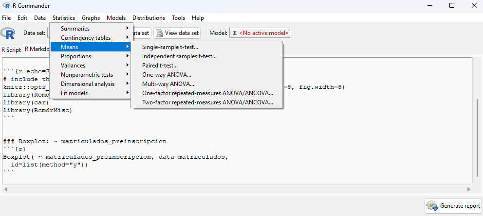
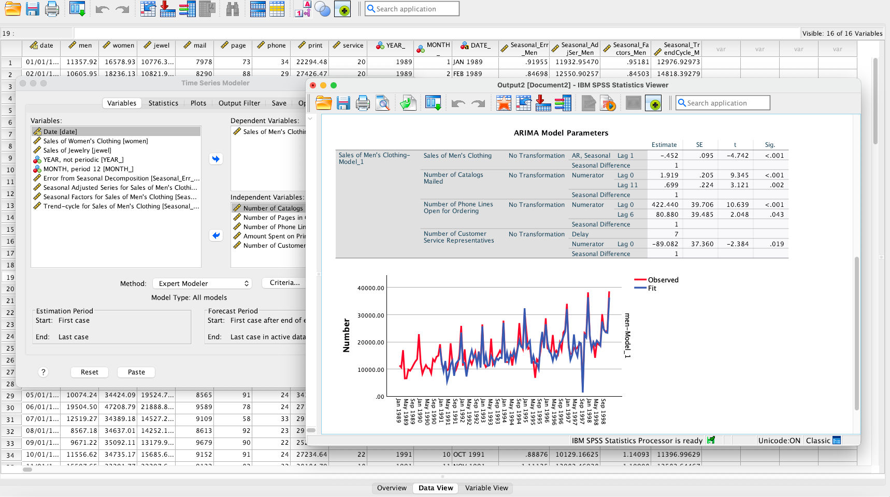
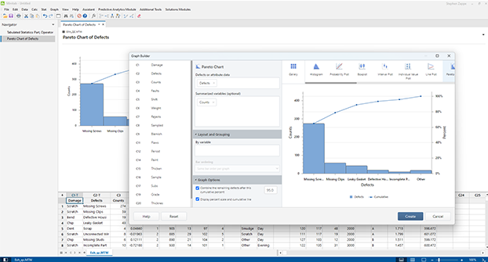
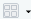
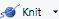
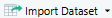
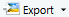

{kind=link}
{kind=link}
{kind=link}
{kind=link}
{kind=link}
{kind=link}
{kind=link}
{kind=link}
{kind=link}
{kind=link}
{kind=link}
{kind=link}
{kind=link}
{kind=link}
{kind=link}
{kind=link}
{kind=link}
{kind=link}
{kind=link}
{kind=link}
{kind=link}
{kind=link}
{kind=link}
{kind=link}
{kind=link}
{kind=link}
{kind=link}
{kind=link}
{kind=link}
{kind=link}
{kind=link}
{kind=link}
{kind=link}
{kind=link}
{kind=link}
{kind=link}
{kind=link}
{kind=link}
{kind=link}
{kind=link}
{kind=link}
{kind=link}
{kind=link}
{kind=link}
{kind=link}
{kind=link}
{kind=link}
{kind=link}
{kind=link}
{kind=link}
{kind=link}
{kind=link}
{kind=link}
{kind=link}
{kind=link}
{kind=link}
{kind=link}
{kind=link}
x <- 12 Introducción a R y RStudio
Trabajar con conjuntos de datos es consustancial a la labor estadística. Estos datos, extraídos del campo que estemos estudiando en cada una de nuestras aplicaciones prácticas, pueden tener naturalezas muy variadas. Sin embargo, hay una serie de tratamientos matemáticos generales que podemos aplicarles, con independencia de su procedencia, con el objetivo de estudiarlos.
Podemos plantearnos describir la estructura de los datos, analizar las distintas variables involucradas y la relación entre las mismas, realizar gráficas de interés que permitan entender su comportamiento, o realizar inferencias que nos permitan extraer conclusiones útiles de los mismos, entre otras tareas. Estos procedimientos se realizan a través del lenguaje de la Probabilidad y la Estadística, y serán objeto de tratamiento en capítulos posteriores.
No obstante, estos conjuntos de datos pueden tener grandes dimensiones. Asimismo, los cálculos probabilísticos asociados no son nada insignificantes. En consecuencia, se hace indispensable el uso de software estadístico para automatizar estas tareas. Estos softwares específicos para la labor estadística son habitualmente conocidos como paquetes estadísticos.
El propósito de este capítulo es presentar una introducción a los mismos y, en particular, al que será nuestra elección para el desarrollo de los contenidos de este proyecto, R y su interfaz RStudio. Se trata de una de las alternativas de código libre más populares mundialmente, el estándar en universidades e instituciones de investigación, y en particular, la más habitualmente empleada en la UMU.
Veremos cómo instalarlos y cómo ampliar su funcionalidad mediante paquetes; presentaremos una descripción detallada de la interfaz de RStudio y cada una de sus partes (scripts, informes, consola, entorno, historial, archivos, gráficos, ayuda); estudiaremos cómo trabajar con R y cómo funciona su lenguaje (variables, listas, funciones, operadores); y finalmente, veremos cómo trabajar con datos en R (fuentes, marcos de datos, importar, etc).
Buena parte de este capítulo está pensado para servir de manual de referencia: No tenga miedo de saltar de una sección a otra usando el índice y los numerosos enlaces que habitualmente pueblan el texto, en función de sus intereses.
2.1 Paquetes estadísticos
Un paquete estadístico es un software específico que facilita el estudio estadístico de conjuntos de datos, la realización de cálculos probabilísticos, y la automatización de tareas habituales en la labor estadística en general. Debido a la naturaleza de estos tratamientos el uso de un software es imprescindible en la práctica, tanto para profesionales como para usuarios casuales o para estudiantes.
En esta sección vamos a presentar una introducción a los paquetes estadísticos, describiendo sus funcionalidades principales, haciendo una comparativa entre los más habituales, y narrando brevemente la historia de nuestro protagonista: R y RStudio.
Tip
El lector que ya tenga estas cuestiones claras y quiera pasar directamente a ver cómo instalar R y RStudio puede saltar a Sección 2.2.
2.1.1 Funcionalidades
Conviene detallar un poco más con qué tareas puede ayudarnos un paquete estadístico, y describir las funcionalidades generales que se esperan del mismo, a fin de clarificar su utilidad y de orientar qué es lo que buscamos a la hora de escogerlo.
2.1.1.1 Manejo de datos
Una primera tarea, que a menudo resulta efectivamente la primera en la práctica, es el manejo de datos. Cuando estemos realizando cualquier estudio de campo será habitual tomar una serie de datos, que pueden además requerir tratamiento previo antes de su análisis. Para ello, lo usual será organizar dichos datos en un fichero, ya sea de texto plano (.txt, .csv) o hoja de cálculo (.xls, .xlsx, .ods), e importarlos en el paquete; aunque para cantidades más grandes de datos los mismos también pueden provenir directamente de una base de datos (MySQL, SQLite, PostgreSQL).
Hecho esto podremos limpiar los datos y manipularlos como sea necesario (cambios de escala, eliminación de datos corruptos, detección de incoherencias, reestructuración de variables, etc). Asimismo, podremos buscar datos incompletos (y completarlos o eliminarlos, según sea el caso), o detectar elementos atípicos (que pueden indicar casos extraños pero también errores de medición o de modelo).
Llegados a este punto estaremos en condiciones de realizar análisis estadísticos con nuestros datos.
2.1.1.2 Estadística Descriptiva
Un siguiente paso consiste en el estudio descriptivo de los datos y su visualización. Este es el propósito de la Estadística Descriptiva, que será el objeto de los siguientes capítulos. Podemos organizar, ordenar y tabular los datos automáticamente para observar cómo cambian cada una de las variables, así como calcular distintos valores (llamados estadísticos) que sumaricen el comportamiento o la estructura de los datos (la media, la varianza, los cuartiles, la correlación, etc). Igualmente, es habitual (casi imperativo en cualquier análisis comprensivo) acompañar lo anterior de visualizaciones gráficas que lo clarifiquen (diagramas de barras, histogramas de frecuencias, gráficos de sectores, gráficos de caja, etc).
Conviene enfatizar que el objetivo de la Estadística Descriptiva no es extrapolar los datos ni extraer conclusiones de toda la población (de ello se encarga la Estadística Inferencial), sino únicamente describir los datos, como bien indica su nombre. Dicho de otro modo, el objeto de estudio de la Estadística Descriptiva es la muestra, y el objeto de estudio de la Estadística Inferencial es toda la población.
2.1.1.3 Modelización y cálculos probabilísticos
Otra funcionalidad habitual que nos proporcionan los paquetes estadísticos es la realización de cálculos probabilísticos, la modelización probabilística y el trabajo con distribuciones de probabilidad.
Como veremos más adelante, a pesar de que en la naturaleza reine aparentemente el azar, y de que muchas de las variables y de los fenómenos que estudiemos en la práctica sigan un comportamiento aleatorio, esto no implica que no podamos extraer ninguna información o ninguna conclusión útil de las mismas. En efecto, habitualmente podemos comprobar que su comportamiento sigue ciertos patrones y pautas coherentes que permiten entender las variables e incluso hacer estimaciones sobre las mismas.
Pensemos por ejemplo en como el lanzamiento de una moneda, si bien se trata en esencia de un evento aleatorio y en consecuencia impredecible, sí sigue un patrón claro, a saber: que a la larga es de esperar que la mitad de tiradas sean cara y la mitad cruces, aproximadamente. Un resultado que se desvíe notablemente de lo anterior puede llevarnos a sospecha, e incluso podemos cuantificar el grado de dicha sospecha.
Lo anterior es naturalmente una descripción intuitiva, informal e imprecisa. Sin embargo, este conjunto de pautas pueden describirse de forma más matemática rigurosa mediante modelos y distribuciones de probabilidad. Este es el propósito de la Teoría de la Probabilidad, la cual también será objeto de uno de los capítulos posteriores. La Teoría de la Probabilidad nos permite desarrollar de un modo más concreto y riguroso una forma de estudiar los fenómenos aleatorios, estimar lo probable que es un suceso u ocurrencia, determinar los resultados más esperados de un experimento, etc.
Los paquetes estadísticos nos permiten realizar simulaciones de modelos estadísticos descritos con precisión para observar su evolución, extraer “muestras” simuladas de variables de acuerdo a una gran diversidad de distribuciones de probabilidad, o calcular probabilidades de sucesos, entre otros muchos estudios.
2.1.1.4 Estadística inferencial
El estudio de los datos es un paso previo al que normalmente no nos limitaremos. Una vez analizados los datos es habitualmente deseable emplear la información obtenida para tratar de extraer conclusiones acerca de la población completa. Estas extrapolaciones o inferencias son objeto de la Estadística Inferencial y suponen un grueso muy importante de la labor del estadista. Dentro de las aplicaciones más usuales con las que nos ayudarán los paquetes estadísticos cabe mencionar las siguientes.
Podemos estimar el valor de características (estadísticos) de toda la población, tales como la media o la varianza, mediante los denominados estimadores. Nótese como a la hora por ejemplo de calcular la media de una muestra no estamos haciendo estimación alguna, ni hay incertidumbre de ningún tipo, se trata de un mero cálculo con los datos tomados, y en todo caso la única fuente de aleatoriedad ha sido la toma de la muestra en sí. Es a la hora de extrapolar esta información a la población completa donde se introduce el factor del azar, y por tanto donde se introduce la incertidumbre en nuestra respuesta.
Para mejorar las estimaciones puntuales anteriores es común estudiar los valores esperados mediante intervalos de confianza, que nos indican no sólo el valor esperado más probable, sino un intervalo completo donde cabe esperar que se mueva el resultado con un cierto nivel de certidumbre.
Finalmente, podemos plantear una gran diversidad de hipótesis estadísticas acerca de una población y testearlas mediante los conocidos contrastes de hipótesis. Realizar estos contrastes manualmente supone un gran tedio como consecuencia de los cálculos involucrados, de modo que la ayuda de los paquetes estadísticos es esencial.
Asimismo, y si bien nunca podemos aspirar a la certeza total al tratarse de fenómenos aleatorios, también nos permiten evaluar el grado de certidumbre de las estimaciones y de la conclusiones que obtenemos. Esto resulta capital a la hora de juzgar la verosimilitud de unos resultados, o de interpretar un trabajo estadístico o incluso cualquier estadística que nos presenten (por ejemplo, en los medios).
Importante
Por cuestiones de tiempo, a diferencia de las aplicaciones anteriores, la Estadística Inferencial no será tratada en estos apuntes por el momento.
2.1.1.5 Automatización de tareas y reproducibilidad
Un punto clave de los paquetes estadísticos es que nos permiten realizar secuencias de tareas de forma automática. Es muy habitual que un estudio estadístico no se componga únicamente de uno o dos cálculos, sino de una serie de operaciones en cadena: importar datos, generar muestras, calcular estadísticos, realizar estimaciones, graficar diagramas, llevar a cabo inferencias, reportar los resultados en un informe final, etc.
En consecuencia, es vital tener una forma de introducir todas las instrucciones que deseamos llevar a cabo y guardarlas para poder reproducirlas con exactitud en el futuro de manera automática. Al igual que el código en un lenguaje de programación, en los paquetes estadísticos disponemos de la posibilidad de generar scripts que mecanicen las operaciones de nuestro estudio. Esto nos permite además guardar nuestro trabajo y reiniciarlo posteriormente en el caso de quedarnos a medio.
Nota
Esta posibilidad liga también con un mantra básico en la ciencia, la reproducibilidad, que hace referencia a la capacidad de poder reproducir los resultados de un trabajo científico para comprobar su validez. En el caso de trabajos con contenido estadístico, compartir los conjuntos de datos y los scripts utilizados es la mejor manera de asegurar que otras personas puedan reproducir nuestro estudio con comodidad para analizarlo y verificarlo.
2.1.1.6 Redacción de informes y reportes
Por último, pero no por ello menos importante, todo trabajo estadístico que no sea mera experimentación casual tiene que ser comunicado de alguna manera. Para ello se hace indispensable la redacción de un informe que describa los objetivos del mismo, los conjuntos de datos empleados, los procedimientos llevados a cabo, y los resultados obtenidos; acompañado de todas las visualizaciones gráficas que se crean convenientes, o de las instrucciones y los códigos utilizados.
Para ello los paquetes estadísticos son una excelente opción, pues además de proporcionarnos una forma de redactar un informe (como podríamos hacerlo con cualquier otra herramienta dedicada a esto, como Word o LaTeX), tienen las funcionalidades estadísticas plenamente integradas. En consecuencia, podemos incluir en el informe las instrucciones del paquete y los resultados de las mismas, las gráficas generadas por el propio paquete, o cualquier otro recurso de interés.
De hecho, los paquetes estadísticos nos permiten combinar ambas fases del trabajo: los propios cálculos forman luego parte del informe. Los resultados se integran directamente en el mismo, y si cambian los datos o si modificamos cualquier parte del proceso, el resto del informe se actualiza automáticamente con los nuevos datos y los nuevos resultados, sin necesidad de tener que inspeccionarlo manualmente y cambiarlo tediosamente.
Además, a menudo los paquetes estadísticos también nos permitirán incluir recursos matemáticos (símbolos, fórmulas, gráficas, etc) en los informes con mayor comodidad que otras herramientas, al traer integrado soporte para lenguajes como LaTeX.
Tip
Como muestra un botón, los apuntes que están leyendo en estos momentos han sido generados íntegramente con un paquete estadístico, RStudio, junto con una extensión (Quarto), especialmente diseñada para potenciar la generación de informes técnicos.
2.1.2 Breve comparativa
A la hora de seleccionar el paquete a emplear podemos tomar en consideración varios criterios, si bien conviene remarcar que para las labores más elementales, como aquéllas a las que puede tener que enfrentarse un estudiante, cualquier paquete nos tendrá cubiertos sin problemas. Sin embargo, veremos varias características en las cuales nuestra elección final, RStudio, destaca notablemente sobre las otras.
Algunas características a tener en cuenta son las siguientes:
Naturalmente, las funcionalidades del software son la principal prioridad. No obstante, como ya hemos mencionado, salvo que tengamos unas necesidades estadísticas muy específicas, lo más probable es que aquellas funcionalidades que necesitemos estén disponibles en todos los paquetes estadísticos del mercado. Otra cuestión son las características extraordinarias que sí pueden distinguir unos de otros, como por ejemplo la automatización de tareas mediante scripts o la redacción integrada de informes estadísticos.
Otra cuestión importante es la interfaz del software. Los paquetes estadísticos pueden dividirse, grosso modo, entre aquellos con interfaz gráfica basada en menús, y aquéllos basados en comandos. Los primeros tienen la ventaja de resultar más familiares para los usuarios menos iniciados, resultando en una barrera de entrada más pequeña y menor riesgo de errores. Los segundos tienen la ventaja de proporcionar un control más fino al usuario, resultando más flexibles y potentes, y pudiendo automatizar con más comodidad las tareas mediante la programación de scripts. Como ya hemos comentado, esta capacidad es particularmente deseable.
También debemos considerar es si el software es comercial o gratuito, o incluso de código libre. Estos últimos, además de ser gratuitos, hacer disponible su código de forma abierta para que el público pueda modificar los programas o desarrollar sus propias extensiones. En caso de pertenecer a una organización como una universidad, que habitualmente compra licencias para los software de pago que considera de mayor relevancia para sus estudios, este factor puede no ser tan relevante. Sin embargo a la hora de usarlo como particulares seguramente nos importe más.
Finalmente, también merece la pena prestar atención al tamaño de la comunidad de dicho paquete estadístico. A mayor número de usuarios, mayor cantidad de recursos que seremos capaces de encontrar en la red, mejor documentación, más cantidad de ejemplos, y más sencillez a la hora de buscar ayuda. Esto se torna particularmente importante en los paquetes de código libre, pues ello abre una puerta no disponible en otro caso: el desarrollo de extensiones. En los paquetes de código libre tendremos disponible el acceso a comunidades de usuarios dedicadas al desarrollo de aplicaciones y herramientas relacionadas con el mismo, lo cual permite expandir la funcionalidad del software y mejorar su mantenimiento en el tiempo. Como ejemplo ya mencionado antes, los presentes apuntes han sido desarrollados con una extensión de R y RStudio.
Atendiendo a las características anteriores, podemos mencionar algunos de los paquetes estadísticos con el objetivo de realizar una somera comparativa, algunos de cuales forman o han formado parte del conjunto de herramientas disponible en la Universidad de Murcia.
R: Se trata, de hecho, de un lenguaje de programación completo, pero orientado al análisis y visualización de datos y a los cálculos estadísticos. Puede usarse desde la línea de comandos, pero en torno al mismo han surgido numerosas interfaces gráficas para facilitar su uso. Se trata, hoy día, de la alternativa más popular a la hora de realizar trabajos en estadística, ciencia de datos, y ramas similares. Es, además, gratuito y de código libre, lo que ha facilitado su adopción y extensión mundial. Otra característica fundamental a destacar es la existencia de paquetes, tanto oficiales como desarrollados por la comunidad, que permiten extender la funcionalidad de R sobremanera. Destacamos las siguientes interfaces:
Figura 2.1: R en la terminal - RGui: Se trata de una interfaz muy básica que viene incluída con la instalación de R. La interfaz, realmente, no permite automatizar ninguna tarea estadística. Simplemente permite acceder a la consola de R sin tener que pasar por la terminal de comandos usual, pero debemos comunicarnos con R mediante comandos igualmente. Posee menús para realizar algunas tareas básicas tales como instalar paquetes.
RGui mostrando la terminal, una gráfica, y el diálogo para instalar paquetes - RStudio: Esta interfaz es un punto intermedio entre una interfaz por comandos y una interfaz completamente gráfica, y combina las mejores partes de ambas: la potencia y flexibilidad de una interfaz por comandos, con la sencillez y la comodidad de una interfaz gráfica. RStudio dispone de una consola con la que introducir comandos directamente, así como una ventana para redactar scripts e informes conectada con el motor de R. Asimismo, dispone de pestañas para visualizar las gráficas generadas, o para ver los nuestro entorno de trabajo con los conjuntos de datos que hemos cargado y las variables que hemos definido, así como instalar paquetes, ver el historial de comandos, o consultar los documentos de ayuda. Las instrucciones estadísticas concretas, aún así, tenemos que introducirlas en forma de comandos.
RStudio con un conjunto de datos cargado, mostrando el entorno, la consola y una gráfica - RCommander: Se trata de una interfaz gráfica basada completamente en el uso de menús. En lugar de emplear comandos ejecutados desde la consola, cada operación que queramos llevar a cabo (cálculo de probabilidades, estimación de valores, contrastes de hipótesis, etc) puede localizarse en el menú de opciones de manera convencional, y tiene su correspondiente ventana para configurar todas las opciones de la misma, en la manera a la que nos tienen acostumbrados las interfaces modernas.

RCommander mostrando algunos de sus menús de opciones NotaLa realidad es que RCommander también pone a nuestra disposición la consola para enviar instrucciones a R directamente. No obstante, su uso está pensado para evitarla por completo.
SPSS: Originalmente un acrónimo de Statistical Package for the Social Sciences, y actualmente un nombre propio, fue uno de los primeros paquetes estadísticos comerciales, desarrollado inicialmente en 1968 y adquirido por IBM en 2009. Sigue siendo uno de los estándares en la industria, y como tal está presente en muchas instituciones, incluyendo en la Universidad de Murcia. Tiene la ventaja de tener una interfaz muy cómoda para el usuario novicio, y una gran estabilidad y robustez debido a su largo tiempo de desarrollo. Sin embargo, tiene la desventaja de tener una licencia algo onerosa, así como poca capacidad de ser ampliado mediante extensiones o de realizar informes técnicos. Existe una alternativa específica de código abierto llamada PSPP.

SPSS (Fuente) Minitab: Se trata de otra alternativa comercial con interfaz basada en menús, cuyo uso solía ser también habitual en nuestra universidad. En tiempos recientes, sin embargo, su uso ha decaído bastante en favor de RStudio. Originado en 1972, uno de sus puntos fuertes era la claridad de su interfaz, fuertemente basada en tablas, y de sus gráficos. No obstante, adolece de las mismas dificultades que SPSS, así como de una menor flexibilidad a sus alternativas de código abierto.

Minitab (Fuente) Merece la pena también mencionar herramientas y librarías más generales que, si bien no están orientadas específicamente al análisis estadístico, sí que incorporan numerosas funcionalidades relacionadas con el mismo, integradas dentro de una suite más amplia de funciones matemáticas, lo cual les convierte en una potente alternativa para desarrollar la parte matemática y computacional de un trabajo:
NumPy y SciPy: Se trata de librerías del lenguaje de programación Python orientadas al cálculo numérico y a la computación científica. Entre otras muchas funciones, incluyen métodos para trabajar con conjuntos de datos, transformarlos y analizarlos. Son particularmente útiles cuando se quieren combinar estas funcionalidades con otras de corte no necesariamente estadístico, y son muy empleadas en ingenierías.
Matlab y Octave: Se trata de programas de cálculo simbólico que definen además su propio lenguaje de programación (tal como R, o como Python) para automatizar las tareas. En primero se trata de un programa comercial (abreviatura de Matrix Laboratory) desarrollado a finales de los años setenta y con un amplio uso a nivel mundial. Nuevamente, la Universidad de Murcia dispone (o ha dispuesto en el pasado) de licencias de MatLab. Octave, por otro lado, se trata de una alternative de código libre desarrollada a principios de los años noventa como parte del proyecto GNU. La sintaxis y uso del mismo es muy similar al de MatLab.
Podríamos mencionar muchas otras alternativas conocidas, tanto comerciales (Mathematica, SAS, Stata) como de código libre (Julia, Sage), pero con lo anterior tenemos cubiertas las más populares dentro del campo de la estadística.
Hecha esta breve comparativa, podemos justificar nuestra elección de RStudio para la realización de estos apuntes en base a los criterios mencionados anteriormente: Por un lado, su carácter gratuito facilita mucho su adopción, tanto por parte de instituciones como, especialmente, de particulares (estudiantes, profesores, etc), sin la necesidad de preocuparse por la obtención de las licencias pertinentes. Por otro lado, su interfaz proporciona un balance perfecto entre la flexibilidad y la potencia que nos dan los comandos, con la familiaridad de una interfaz gráfica usual. Veremos, por ejemplo, como podemos redactar scripts para automatizar nuestros análisis, e informes para resumir nuestro trabajo, de manera completamente integrada a los propios cálculos estadísticos. Finalmente, gracias a su carácter de código abierto, ha dado lugar a una gran comunidad global de profesionales y usuarios que generan continuamente extensiones del programa, documentación auxiliar, y demás recursos que facilitan su mantenimiento por parte de los desarrolladores y la obtención de ayuda por parte de los usuarios. Y cómo no, al estar también incluído en los recursos de la Universidad de Murcia, su adopción por parte de sus miembros es inmediata.
2.1.3 R y RStudio: Un poco de historia
Para los más interesados, antes de comenzar con la instalación de RStudio y su uso básico, podemos indicar unos breves retales históricos del origen y el contexto de R.
Para ello debemos remontarnos a los años setenta, en los célebres laboratorios Bell de Nueva Jersey (Bell Labs). Se trata de un centro de investigación, originalmente una filial de la compañía telegráfica y telefónica de Estados Unidos (AT&T, American Telephone and Telegraph Company), fundado en 1925, y autores de algunos de los descubrimientos tecnológicos más importantes del siglo XX, en buena medida responsables de muchas de las herramientas de que disponemos hoy en día. Entre ellas podemos incluir dispositivos como el transistor, el láser o la célula fotovoltaica; disciplinas como la teoría de la información o la radioastronomía; el sistema operativo UNIX y muchas de sus aplicaciones; o lenguajes de programación como C, C++, AWK o AMPL, entre otros muchos. Durante su existencia, sus filas incluyeron a una docena de premios Nobel y media docena de premios Turing de computación. Al hablar de muchos desarrollos tecnológicos hoy día no suele ser difícil trazar un hilo bastante corto hasta los laboratorios Bell. Desde 2016, los laboratorios son propiedades de Nokia.
En este contexto, diversos investigadores entre los que se encontraba el estadista John Chambers desarrollaron en torno al año 1975 un lenguaje de programación orientado al procesamiento estadístico de datos, que siguiendo la filosofía de otros lenguajes desarrollados en el laboratorio (B, C) fue bautizado como S (de Statistics). Hasta ese momento, gran parte de las computaciones estadísticas se llevaban a cabo programando directamente en Fortran (abreviatura de Formula Translating System), un hoy vetusto lenguaje de programación general surgido en los años cincuenta que, sin embargo, sigue siendo popular en ingenierías. Como muchos otros desarrollos del laboratorio, la motivación original del mismo fue simplificar la operativa interna del propio laboratorio, pero el resultado final terminó siendo tan potente que se distribuyó públicamente e incluso dió lugar a versiones comerciales, notablemente S-PLUS.
Algunos de los aspectos que introdujo S se convertirían más adelante en características centrales de la computación estadística en general, y de R en particular. Cabe destacar el uso de marcos de datos (dataframes) para almacenar conjuntos de datos a estudiar, la especificación de relaciones entre variables mediante fórmulas (y~x), o la integración de los cálculos estadísticos, los gráficos y los informes en una única herramienta.
En este vídeo puede verse una breve conversación entre John Chambers y otro de los estadistas que contribuyeron al desarrollo de S, Trevor Hastie, acerca del origen de S y su evolución en R. En este otro, más largo, hay una entrevista en detalle.
Dos décadas más tarde, a principios de los años noventa, comenzó en la Universidad de Auckland (Nueva Zelanda) el desarrollo de una alternativa libre y de código abierto que sería bautizada como R, por similitud con S y también por el nombre de sus desarrolladores originales (Ross Ihaka y Robert Gentleman), cuya primera versión se publicó ya en internet en el año 1993 en el clásico archivo StatLib. El objetivo, naturalmente, era disponer de un paquete estadístico potente y flexible como S, pero que pudiera ser mantenido y extendido por la comunidad sin problemas de licencias. En 1997 R pasó a formar parte del proyecto GNU, un proyecto colaborativo masivo de software libre iniciado por Richard Stallman en 1983 y al que pertenecen, entre otras herramientas, el sistema operativo Linux (basado en UNIX) y buena parte de sus herramientas más reconocibles (GCC, Bash, GDB, Emacs, Coreutils, Binutils, Screen, nano, etc). Con este paso, R entraba sin ambages en la realeza del software libre.
R heredó de S buena parte de su sintáxis y su semántica, hasta el punto de ser, en parte, retrocompatible (es decir, que muchos código de S pueden funcionar en R). También mantuvo características ya mencionadas como los marcos de datos, la notación de fórmulas, la incorporación de distribuciones de probabilidad clásicas, o el renderizado de gráficos. Asimismo introdujo numerosas nuevas características, entre las que destaca un sistema de paquetes para ampliar la funcionalidad del programa. Desde entonces, el lenguaje no ha hecho sino enriquecerse con el tiempo gracias a su carácter de código abierto, y se ha convertido en el estándar en universidades e instituciones de investigación. En 1997 se creó el CRAN (Comprehensive R Archive Network), un archivo donde la comunidad puede compartir sus paquetes de R y otros recursos de forma estandarizada. Actualmente posee más de 90 servidores y 23000 paquetes. Este repositorio sigue la filosofía de otros similares como el CTAN para LaTeX o el CPAN para Perl.
Nota
Sin ir más lejos, la ya mencionada interfaz gráfica de R, RCommander, no es más que un paquete de R: Rcmdr.
Conforme ha aumentado la comunidad en torno al lenguaje han ido surgiendo organismos formales y informales para el mantenimiento del lenguaje, de los repositorios y de los distintos recursos de la comunidad. Cabe destacar el R Core Team, el equipo central que mantiene el código fuente de R; la R Foundation for Statistical Computing, que proporciona gran parte del soporte económico; o el R Consortium, que forma parte de Linux y participa en el desarrollo de la infraestructura de R.
Uno de los puntos débiles de R, en especial para audiencias modernas o no profesionales, es su falta de interfaz gráfica. Sortear este escollo, sin embargo, no es problema como consecuencia de la naturaleza de código abierto del programa. En 2011 surge RStudio con el objetivo de proporcionar un IDE (entorno de desarrollo integrado) para R. En lugar de tratarse de una interfaz gráfica como tal, RStudio combina la terminal de R con una serie de ventanas que facilitan ver los datos y los gráficos generados, o redactar scripts e informes, entre otras muchas ventajas que iremos desgranando a lo largo del capítulo.
2.2 Instalación de R y RStudio
El primer requisito, como ya hemos mencionado, es tener R, que es el propio paquete estadístico y por tanto el motor de todos los cálculos. Tras esto instalaremos RStudio, que nos proporciona la interfaz gráfica. Finalmente comentaremos cómo extender la funcionalidad de R mediante la instalación de paquetes, creados tanto por el equipo oficial de R como por la comunidad.
Tip
Si ya tiene R y RStudio instalados puede saltar directamente a la siguiente sección, aunque es recomendable por lo menos ojear Sección 2.2.3, ya que se incluyen detalles útiles o interesantes acerca de los paquetes de R.
2.2.1 Instalar R
Desde la web oficial de R podemos llegar a la página del CRAN, el Comprehensive R Archive Network, que contiene las descargas tanto del propio R como de todos los paquetes y recursos relacionados. R está disponible para Windows, Linux y macOS. En Linux también pueden usarse repositorios de paquetes para obtenerlo.
Vamos a asumir en esta guía una instalación en Windows por tratarse del sistema operativo más común, el resto siguen procesos similares. Para una primera instalación, la versión que nos interesa es la base, que contiene el programa completo, la cual puede encontrarse aquí.
La última versión disponible puede siempre descargarse automáticamente desde este enlace. A fecha de escribir esta guía, dicha versión es la 4.5.2, pero el enlace anterior siempre proporcionará la versión más reciente. También pueden encontrarse las versiones antiguas, desde el año 2000, en este otro enlace.
Una vez descargado lo ejecutamos y se abrirá el instalador. Se trata de un instalador muy estándar, luego el proceso de instalación es el usual:
En primer lugar nos pedirá escoger el lenguaje de instalación y del programa. Escogeremos Español para esta guía, pero también es interesante escoger English para todos aquellos que estén cómodos con el mismo, ya que a la hora de buscar información en internet, documentación del programa, o ejemplos, la mejor forma de encontrar la mayor cantidad de resultados es, naturalmente, hacerlo en inglés, y para esto ayuda tener la propia interfaz en su idioma inglés original.
Tras esto tendremos que aceptar los términos (damos a Siguiente) y condiciones.
Luego escogeremos el lugar de instalación. Si no tenemos ninguna preferencia podemos simplemente dejar el lugar predeterminado (por ejemplo,
C:\Archivos de Programa\R\R-4.5.2) y dar a Siguiente. Esto también ayudará a que RStudio, o cualquier otro programa que instalemos en el futuro y que también necesite R (por ejemplo, Quarto), lo encuentre de manera trivial.Seguidamente nos pedirá escoger qué componentes deseamos instalar. Los dejamos todos marcados y pulsamos nuevamente en Siguiente.
En este momento, podemos escoger si utilizar las opciones de configuración o no. Si buscamos una instalación sencilla, simplemente marcamos que No y pulsamos Siguiente, en cuyo caso se usarán las opciones por defecto, que son las más usuales. Si queremos configurarlas, marcamos que Sí y tendremos las siguientes opciones a nuestra disposición:
En primer lugar, podemos escoger si usar una única ventana (MDI) o ventanas múltiples (SDI). La opción por defecto es la primera, que quiere decir que al abrir R directamente tendremos en primer plano una ventana maestra dentro de la cual se abrirán, en forma de subventanas, todas las demás (terminal de comandos, gráficas, lista de paquetes… véase Figura 2.1). En caso contrario, cada subventana se abriría por separado. En nuestro caso esta opción es irrelevante, porque en lugar de abrir R directamente usaremos la interfaz RStudio.
En segundo lugar nos pide seleccionar qué tipo de ayuda queremos tener cuando consultemos la documentación interna de R, bien en texto plano o bien en HTML. La segunda viene por defecto y es preferible ya que tiene un formateo más rico, aunque nuevamente nos es irrelevante ya que consultaremos la documentación desde dentro de RStudio, donde es HTML por defecto.
En el siguiente menú podemos escoger si queremos crear una carpeta para R en el Menú Inicio de Windows. Esto cada vez es menos importante, ya que en las últimas versiones de Windows (10, 11) este menú ha ido progresivamente perdiendo importancia y se accede muy poco. Hoy día es más habitual escribir el programa que buscamos en la barra y buscarlo directamente (si es que no tenemos ya un acceso directo en el Escritorio).
Finalmente podemos escoger una serie de opciones adicionales. Crear un acceso directo en el Escritorio para acceder a R viene marcado por defecto, pero como no usaremos R directamente (sino RStudio) tampoco lo necesitaremos. Del mismo modo, asociar los archivos
.RDatacon R nos permite que al hacer click sobre ese tipo de ficheros, se abran automáticamente con R. Estos ficheros se emplean para guardar proyectos de R completos. Es irrelevante marcar esta opción, porque al instalar RStudio asociaremos dichos ficheros con él.
Llegados a este punto comenzará la instalación en la carpeta, y si todo va bien, al terminar pulsaremos en Finalizar y habremos terminado.
2.2.2 Instalar RStudio
Una vez tenemos instalado nuestro paquete estadístico R, pasamos a instalar la interfaz gráfica que vamos a emplear en el curso, RStudio. EStá disponible en dos modalidades:
RStudio Desktop: Se trata del cliente usual que nos permite comunicarnos con R directamente. Este será el que necesitaremos para seguir el curso, el que describiremos en las siguientes secciones, y al que nos refiramos cada vez que mencionemos “RStudio”.
RStudio Server: Esta versión está preparada para correr en servidores, sin interfaz gráfica directa. Posteriormente, los clientes pueden conectarse al servidor (que podría estar en la misma red, o conectarnos a él a través de internet), y ejecutar una interfaz gráfica desde el navegador.
Tip
RStudio Server puede ser particularmente útil para instituciones o empresas, para acceder al programa corporativo desde los ordenadores de los empleados o desde casa. O simplemente si queremos acceder a nuestro propio programa desde varias máquinas distintas.
Al igual que R, RStudio está disponible para Windows, Linux y macOS; asumiremos Windows para la presente guía. Para descargar la última versión disponible, actualmente la 2026.01.0+392 a fecha de escribir esta guía, basta acceder al enlace y usar el botón disponible en el paso 2.
Este botón debería detectar nuestro sistema operativo y escoger la versión apropiada automáticamente. Si por un casual no lo hiciera correctamente, podemos bajar y encontraremos instaladores para todos los sistemas operativos soportados, así como versiones directamente comprimidas en ZIP. También podemos encontrar las versiones antiguas en este otro enlace.
Una vez descargado lo ejecutamos y se abrirá nuevamente el instalador. La instalación en este caso es completamente trivial, únicamente tendremos que escoger dónde instalarlo. Nuevamente es recomendable dejar la localización que viene por defecto si no tenemos ninguna otra preferencia. Hecho esto la instalación comenzará y, con suerte, terminará sin problemas.
Nota
El instalador de RStudio no nos da la opción de configurar ninguna de las opciones que sí pudimos configurar con R. Por el contrario, RStudio creará automáticamente un icono en el Escritorio, asociará los ficheros usuales de R (por ejemplo .R, .Rmd,.Rproj ó .RData) con RStudio, y creará una carpeta en el menú de inicio.
La primera vez que abramos RStudio es posible que tengamos que escoger qué versión de R utilizar, especialmente si tenemos varias instaladas, o simplemente confirmar que RStudio ha detectado la versión correcta. Podemos seleccionar la primera opción, que escogerá la versión de R por defecto (seguramente la más reciente), o buscar la más reciente en la lista manualmente, y seleccionar OK para confirmar:
Una vez abierto nos aparecerá la interfaz principal del RStudio. Véase Sección 2.3 para una descripción de cada una de las partes básicas del programa, y las secciones siguientes para ver cómo usarlo.
2.2.3 Instalar paquetes: el CRAN
Como ya mencionamos en secciones anteriores, una de las ventajas de que todo el ecosistema de R sea de código abierto es que la comunidad puede, entre otras cosas, crear herramientas en torno a R (tales como el propio RStudio) o ampliar la funcionalidad del mismo.
Los paquetes de R son colecciones de funciones, de documentación, y de datos que permiten expandir la propia funcionalidad de R. Estos paquetes están creados por el propio equipo de R, por instituciones, o en su gran mayoría, por usuarios cualesquiera de R con los conocimientos necesarios. De hecho, el lector interesado puede consultar el manual oficial para la programación de paquetes de R en formato HTML o PDF. Otros manuales oficiales relacionados pueden encontrarse en la sección de manuales.
Importante
No se deben confundir las nociones de paquete estadístico y paquete de R. El primero es cualquier software de cálculo especializado en la estadística y la probabilidad, tal como el propio R o las alternativas mencionadas en Sección 2.1.2. El segundo es cualquier extensión de R que puede instalarse para ampliar su funcionalidad. Se trata, por tanto, de un concepto concreto dentro del ecosistema de R.
Los paquetes de R pueden instalarse desde dentro del propio R (o, en nuestro caso, desde RStudio), y una vez instalados pasan a formar parte de nuestra librería y pueden cargarse en cualquier proyecto. Los paquetes sólo han de ser instalados una única vez, pero deben cargarse en cada sesión en la que quieran usarse sus funcionalidades. También podemos desinstalar un paquete si sabemos que no vamos a volver a necesitarlo, aunque con el almacenamiento de hoy día no es usual tener que recurrir a esta opción.
Como ejemplo, uno de los paquetes (o, de hecho, colecciones de paquetes) más populares es tidyverse, que contiene funciones para manejar y transformar datos cómodamente. Ha sido instalado más de 100 millones de veces, y uno de sus paquetes, ggplot2 (dedicado a mejorar sustancialmente las gráficas de R, altamente recomendable) es el más instalado del mundo, con casi 180 millones de instalaciones.
2.2.3.1 El CRAN: Comprehensive R Archive Network
Los paquetes de R se encuentran minuciosamente organizados en el ya mencionado CRAN (Comprehensive R Archive Network), un repositorio creado en 1997 con alrededor de 90 servidores repartidos por todo el mundo. A fecha de escribir esta guía el CRAN contiene más de 23000 paquetes de muy diversa funcionalidad, clasificados en 49 categorías tales como bases de datos, finanzas, optimización, cálculo numérico, etc.
Puede consultarse la lista completa por orden alfabético, por orden cronológico, o por orden de descargas. No fue hasta los años 2010-2012, cuando se llevó a cabo una gran reestructuración de CRAN, que se empezaron a preservar metadatos, razón por la cual no aparecen paquetes con fecha anterior. No obstante, algunos de los paquetes más clásicos (p. ej. MASS o nnet) existen desde el mismo estreno de R a mediados de los años noventa.
Advertencia
Es posible que la primera vez que instalemos nuestro primer paquete nos pida confirmación para crear una librería de paquetes de usuario, si no tenemos permiso para modificar directamente la carpeta donde R está instalado, que pertenece a todos los usuarios del sistema. Una vez confirmemos se creará una librería de paquetes propia, únicamente para nuestro usuario, y no habrá que volver a indicarlo.
2.2.3.2 Instalación
Antes de poder usar las funciones de un paquete tenemos que instalarlo. Esto sólo hace falta hacerlo la primera vez, y a partir de ese momento, ya tendremos el paquete disponible en nuestra librería permanentemente. Para instalar los paquetes tenemos varias opciones:
Podemos hacerlo directamente desde la consola de R con el comando
install.packages("paquete"), donde paquete es el nombre del paquete en cuestión. La primera vez que lo hagamos tendremos que escoger desde qué servidor de CRAN descargar los paquetes. Con las conexiones de hoy día esta decisión es prácticamente irrelevante, no obstante, podemos escoger el más cercano (por ejemplo, Madrid o París) para asegurar una baja latencia de conexión.Figura 2.11: Escoger un servidor de CRAN apropiado Hecho esto no tendremos que volver a escoger el servidor durante el resto de la sesión. Sin embargo, al reiniciar el programa, si no cargamos una sesión previa, volverá a ser necesario especificarlo.
Una vez se complete la instalación, si no ha habido ningún problema, veremos algo como lo siguiente, lo cual nos indica que la instalación ha sido exitosa:
Figura 2.12: Instalando un paquete desde la consola de R También podemos hacerlo desde la interfaz básica RGui, que podemos abrir desde el icono que se crea en el escritorio. Para ello, basta acceder al menú de paquetes
Packagesy seleccionarInstall package(s).Nuevamente, la primera vez que lo hagamos en la sesión nos pedirá primero que seleccionemos el servidor de CRAN que deseamos usar. Tras esto, nos mostrará la (larga) lista de paquetes disponibles en CRAN, a fecha de hoy más de 23000:
Figura 2.14: Lista de paquetes en RGui Podemos seleccionar el que queramos y pulsar OK. La instalación procederá como antes, y podremos ver el resultado en la consola de R (ver Figura 2.12).
Finalmente, también podemos hacerlo desde RStudio, que en nuestro caso será la alternativa habitual pues casi siempre accederemos a R desde esta interfaz. Por un lado, podemos hacerlo desde la consola de R (panel inferior derecho) con el comando
install.packages, al igual que en el primer caso.Por otro lado, podemos hacerlo con el menú correspondiente de la interfaz. Para ello nos dirigimos al panel inferior izquierdo de la interfaz y pinchamos en la pestaña
Packages. Aquí podemos ver la lista de paquetes que ya tenemos instalados, tanto en la librería general del sistema, como en nuestra librería de usuario particular. En la parte superior podemos pulsar enInstallpara instalar un paquete nuevo, oUpdatepara actualizar los paquetes que ya tenemos actualizados.Figura 2.15: Menú de paquetes en RStudio Tras pulsar en Install se nos abrirá una ventana donde podemos escribir el nombre del paquete deseado y escoger otras opciones como la librería donde instalarlo (esto podemos dejarlo por defecto). Cuando empecemos a escribir el nombre del paquete nos aparecerá una lista de sugerencias con los paquetes que empiezan por esas mismas letras.
Figura 2.16: Instalando un paquete desde RStudio
Tip
Observemos que también existe la opción de instalar paquetes directamente desde un archivo en nuestro ordenador, en lugar de desde un servidor del CRAN. Esto puede ser útil para probar paquetes no oficiales. Sin embargo, esa opción es más avanzada y no vamos a cubrirla en esta guía, aunque puede consultarse en la guía oficial.
2.2.3.3 Carga
Como ya hemos mencionado, una vez instalado el paquete, tendremos que cargarlo en cada sesión en la que queramos hacer uso de sus funcionalidades. Nuevamente, tenemos varias formas de hacer esto:
Por un lado, podemos cargar un paquete desde la consola de R con el comando
library("paquete"), donde paquete es el nombre del paquete. En este caso, las comillas son de hecho opcionales. Si funciona correctamente no recibiremos respuesta alguna, esto significa que se ha cargado correctamente. Si el paquete no existe o nos equivocamos con el nombre, recibiremos un error.Figura 2.17: Cargando un paquete desde la consola Por otro lado, podemos cargar un paquete desde la interfaz de RStudio simplemente accediendo a la pestaña de
Packagesy activando el icono que aparece al lado del nombre del paquete.Figura 2.18: Cargando un paquete desde RStudio En esta lista aparecen únicamente los paquetes que ya tenemos instalados en nuestra librería. Los que aparecen marcados ya están cargados, y por tanto sus funciones están disponibles en R. Desde esta lista podemos ver también el nombre del paquete, la descripción, el origen (paquete base, repositorio CRAN, un fichero…) y la versión. Asimismo, también tenemos botones para visitar las páginas oficiales del paquete para ver más información, así como desinstalar el paquete.
2.2.3.4 Desinstalación
Si no vamos a querer volver a utilizar un paquete, podemos desinstalarlo, lo cual lo eliminará permanentemente de nuestra librería. Hecho esto, no podremos volver a cargarlo para usar sus funciones hasta que volvamos ha instalarlo.
Teniendo en cuenta la amplitud del almacenamiento de los ordenadores de hoy día, no es habitual tener que eliminar paquetes instalados. No obstante, y teniendo en cuenta que has más de 23000 paquetes disponibles en el CRAN, si se nos ha ido la mano instalando paquetes (por ejemplo, si hemos instalados muchos automáticamente), puede ser interesante conocer cómo eliminarlos. Para ello, disponemos de dos opciones:
Desde la consola de R ejecutando el comando
remove.packages("paquete"), donde paquete es el nombre del paquete. También podemos especificar la librería concreta si tenemos varias (p. ej.remove.packages("MASS", lib = "C:/Archivos de Programa/R/R-4.5.2/library")), pero esto no suele ser necesario, ya que si no lo especificamos, el paquete se eliminará de nuestra librería por defecto:Figura 2.19: Eliminando un paquete desde la consola Desde RStudio, nuevamente en la pestaña de
Packages, encontrando el paquete deseado y haciendo click en el icono⮾(ver Figura 2.18).
2.3 Descripción de RStudio
Una vez arrancado RStudio veremos su interfaz formada por cuatro paneles principales:
Cada panel agrupa una serie de herramientas ubicadas en pestañas en una barra superior. El propósito general de cada panel es el siguiente:
El panel superior izquierdo es el Panel de código. En él se abrirán los ficheros con código de R (scripts), pero también cualquier fichero de texto que queramos, incluyendo por tanto informes. También se pueden visualizar conjuntos de datos.
El panel superior derecho es el Panel de entornos. En él podemos ver nuestro entorno de trabajo, los datos que tenemos actualmente cargados, las variables existentes, o el historial de comandos, entre otras muchas funciones.
El panel inferior izquierdo es el Panel de consola. Es quizás el panel más importante, pues nos permite comunicarnos con R. En él ejecutaremos todas las instrucciones y cálculos y podremos visualizar los resultados. Véase Sección 2.4 para una explicación de cómo trabajar con R.
El panel inferior derecho es el Panel de salida. Este panel contiene una multitud de pestañas de interés, tales como un explorador de ficheros, un visualizador de gráficos, el gestor de paquetes, o un lector de ayuda oficial de R.
Amén de los cuatro paneles principales, también podemos hacer aparecer un quinto panel opcional, la barra lateral, y escoger libremente qué herramientas poner en sus pestañas. Para ello basta hacer click en el botón .
Tip
De hecho, podemos distribuir las pestañas como queramos entre los cinco paneles, consiguiendo una gran flexibilidad para organizar la interfaz a nuestro gusto. Para esto, basta hacer click en el botón

y luego aPane Layout....
Asimismo, podemos cambiar el tamaño de todos los paneles, tanto horizontal como verticalmente, simplemente haciendo click en el borde entre paneles y arrastrando. También podemos minimizar o maximizar cada panel con los botones de su esquina superior derecha: .
Para configurar los paneles con más detalles, podemos hacer click en el botón y navegar sus opciones. Por ejemplo, desde aquí podemos hacer aparecer también la barra lateral y moverla a izquierda o a derecha, así como controlar el zoom de cada panel individualmente.
Vamos a pasar a explicar cómo trabajar con cada uno de los paneles. Como realmente el contenido de los paneles es completamente configurable, vamos a asumir que se ha dejado la configuración por defecto (véase Figura 2.20).
2.3.1 Panel de código
El propósito fundamental de este panel es poder leer y modificar cualquier fichero de texto. En particular, podemos destacar las siguientes funciones:
Redactar scripts de R. Un script no es más que un programa de R, es decir, un conjunto de instrucciones de R que queremos ejecutar de forma consecutiva. Estos ficheros suelen guardarse con extensión
.R. Véase Sección 2.3.1.1.Redactar informes de R. Estos ficheros permiten redactar texto enriquecido combinado con instrucciones de R, y suelen guardarse con extensión
.Rmdo.qmd. Además, las instrucciones de R pueden ejecutarse y el resultado se visualiza en también en el propio fichero. En consecuencia, son ideales para la redacción de trabajos estadísticos (también soporta LaTeX) o incluso textos técnicos y profesionales que pueden exportarse a diversos formatos (texto, HTML, PDF…). Véase Sección 2.3.1.2.Visualizar datos de R. En R, los conjuntos de datos estadísticos suelen cargarse en forma de marcos de datos (dataframes, también conocidos como tidy data), que son tablas donde cada fila corresponde a un individuo de la muestra y cada columna corresponde a una variable. Véase Sección 2.3.1.3.
Tip
Los ficheros de scripts (.R) y de informes (.Rmd, .qmd) no son más que ficheros de texto plano, con lo cual también podemos leerlos y modificarlos con cualquier editor de texto, por ejemplo, con el bloc de notas.
Amén de esto, como ya se ha mencionado antes, podemos visualizar y editar cualquier fichero de texto plano: .txt, .csv, .log, .yml, .html, etc. Para algunos de estos tipos de ficheros la interfaz puede proporcionarnos opciones adicionales cuando sea pertinente, tales como realizar una previsualización del resultado (por ejemplo, para ficheros HTML pulsando en ).
En la barra superior (del RStudio, no del panel de código), tenemos varias opciones relevantes para el panel de código:
El primer botón nos permite crear nuevos ficheros de código, ya sean scripts (
.R), informes (.Rmd,.qmd), ficheros de texto plano (.txt), o ficheros de otros lenguajes de programación (.c,.py, etc).El segundo botón sirve para crear nuevos proyectos de R. Un proyecto en R permite agrupar todos los ficheros relacionados con un cierto trabajo: scripts, informes, imágenes, etc.
El tercer botón (la carpeta) sirve para abrir ficheros ya existentes. Cada fichero se abre en una nueva pestaña. Haciendo click en la flecha podemos ver los ficheros más recientes.
El cuarto botón (el disquete) sirve para guardar el fichero que estamos modificando actualmente (la pestaña que tengamos abierta).
El quinto botón (los disquetes) sirve para guardar simultáneamente todos los ficheros que tenemos abiertos en pestañas. Ideal para guardar nuestro estado periódicamente y no perder trabajo.
El sexto botón (la impresora) naturalmente sirve para mandar a imprimir el fichero que estemos editando.
Después tenemos un formulario para buscar entre el contenido de todos los ficheros que tenemos abiertos: variables, secciones, figuras, etc. Bastante cómodo para encontrar algo cuando tenemos mucho código o muchos ficheros abiertos.
Con los últimos botones podemos modificar, como ya se mencionó en la sección anterior, la interfaz de paneles, hacer aparecer la barra lateral, etc.
Tip
Como es habitual, la mayoría de botones y funcionalidades de la interfaz tienen también una combinación de teclas para ejecutarlo más rápidamente. Por ejemplo, Ctrl+Shift+N crea un nuevo script de R, y Ctrl+S guarda el fichero actual, como es habitual.
2.3.1.1 Scripts
Uno de los tipos de ficheros más importantes en R son los ya mencionados scripts. Dentro de un script, que no es más que un fichero de texto plano con extensión .R, podemos guardar una serie de instrucciones de R: cargar datos y paquetes, realizar cálculos, visualizar gráficas, etc. Después, haciendo uso de la interfaz, podemos volver a ejecutar cualquier línea, o todo el programa al completo.
Esto además nos permite guardar cómodamente nuestro trabajo. En muchas ocasiones, las entregas de clase o incluso de los exámenes de prácticas se suelen hacer subiendo el script correspondiente al Aula Virtual.
Aunque todavía no hemos visto prácticamente ningún comando, a modo de ejemplo, veamos un script que crea dos variables: x e y, con valores 1 y 2, respectivamente, y luego calcula su suma:
Al ejecutar este script, las instrucciones anteriores se ejecutarán una a una en orden, y podremos ir viendo el resultado en la consola (panel inferior izquierdo de RStudio) o en la pestaña de gráficas (panel inferior derecho), en su caso:
Dentro de las opciones disponibles en la barra superior, merece la pena mencionar un par de ellas:
El botón de
Runnos permite ejecutar cualquier instrucción del script. Basta colocar el cursor en la línea que queremos ejecutar y pulsar el botón (o teclearCtrl+Enter). El comando se ejecutará y veremos el resultado en la consola. Podemos también seleccionar varias líneas, o incluso todo el fichero, y entonces todas ellas se ejecutarán, en orden.El botón
Sourcecarga y ejecuta el script entero, de principio a fin. En lugar de ver los resultados en la consola, simplemente se cargarán los datos, se crearán las variables, y demás efectos intencionales.Si marcamos
Source on Save, cada vez que guardemos el script (por ejemplo, haciendo click en el botón del disquete, o tecleandoCtrl+S) este se ejecutará al completo, como si hubiéramos pulsadoSource. Puede ser útil para iterar el script rápidamente cuando estamos haciendo modificaciones.
Tip
Cuando hacemos Source, el resultado de cada instrucción no se imprimirá en la consola, por limpieza (podríamos estar cargando un script muy largo). Sin embargo, podemos imprimir cosas en la consola, pero deberemos hacerlo explícitamente con el comando print.
2.3.1.2 Informes
Una forma de redactar trabajos con R de manera más profesional es con los distintos formatos de informes disponibles. Como ya hemos mencionado, estos informes combinan texto enriquecido con código de R y sus resultados, lo cual los hace ideales para trabajos estadísticos.
Texto “enriquecido” quiere decir, simplemente, que el texto puede formatearse (negrita/cursiva/subrayado, color, tamaño, etc), además de poder añadir tablas, imágenes y otro tipo de figuras, listados, o enlaces clickables. En R todos estos formatos están basados en Markdown, que es un lenguaje de texto plano que permite indicar, mediante símbolos, cómo formatear el texto.
Este curso no pretende ser una guía de Markdown, para ello puede consultarse como referencia este enlace. Por ejemplo, para poner un texto en cursiva basta rodearlo con asteriscos, y para ponerlo en negrita basta rodearlo con 2 asteriscos a cada lado. También se pueden crear secciones o subsecciones añadiendo almohadillas al principio de la línea.
Nota
Una vez tenemos el código del informe, debemos generar el documento final con el aspecto deseado. El formato del informe final puede ser HTML, PDF o incluso - aunque menos deseablemente - Word. El proceso de generar el informe final a partir de su código Markdown tiene muchos nombres, tales como exportar o compilar en español, build, knit o render en inglés. Usaremos los términos en español de forma indistinta a lo largo de este curso, y asimismo, en RStudio pueden encontrarse botones con los términos anteriores, en función del caso, pero siempre sirven para compilar el informe.
Hay varias opciones para realizar este tipo de informes:
El formato clásico, llamado R Markdown, es simplemente Markdown usual con algunas funciones adicionales para integrarlo con R. Por ejemplo, la posibilidad de insertar bloques de código de R, o de configurar el entorno de R a emplear cuando se ejecuta este informe (por ejemplo, paquetes necesarios para cargar). Se suelen guardar en formato
.Rmd, aunque reiteramos, se trata simplemente de ficheros de texto plano.Reciente ha surgido un formato más completo por parte de los desarrolladores del propio RStudio llamado Quarto. Este formato incluye todo lo incluído en el R Markdown estándar (de hecho, es retrocompatible, es decir que un código de R Markdown también puede usarse para generar un informe de Quarto), pero lo completa con muchas extensiones. Quarto permite crear documentos técnicos de mayor complejidad y calidad, maquetarlos con mayor flexibilidad, y exportarlos a más formatos. Puede consultarse una guía muy completa en este enlace.
Nota
Como ya se mencionó anteriormente, todo el presente curso está contenido en un proyecto de RStudio y ha sido generado con Quarto.
Cuando creamos un nuevo fichero de R Markdown, RStudio genera para nosotros un informe de prueba para que podamos usarlo de plantilla y veamos como funciona, grosso modo, el lenguaje Markdown. En la barra superior, además, veremos dos botones: Source y Visual. El primero nos permite ver el código Markdown para modificarlo a mano, mientras que el segundo nos presenta un editor visual, como Word, para editar el informe de manera gráfica (con botones y menús) en lugar de tener que modificar el código Markdown manualmente:
Advertencia
Cuando creamos un nuevo fichero de R Markdown por primera vez es posible que nos salte una ventana informándonos de que tenemos que instalar una serie de paquetes que son necesarios para poder trabajar con markdown. Simplemente deberemos darse a aceptar y esperar a que los paquetes se terminen de instalar en la consola.
Un elemento fundamental de los informes de R son los bloques de código. Estos permiten introducir instrucciones de R en el informe, e integrar sus soluciones de forma automática. Para introducir un bloque de código de R, como se aprecia en la imagen de la izquierda, basta rodearlo con triples acentos graves (```), también llamados backticks. Esto en Markdown genera lo que se llama un bloque de código general:
Este es
un bloque
de códigoSi además ponemos {r} después de los acentos iniciales, entonces estamos indicando que el bloque contiene código en lenguaje R. Usualmente podemos usar esto con otros lenguajes para conseguir que el código se coloree automáticamente de forma apropiada al lenguaje que contiene, de modo que sea más fácil leerlo. Pero en este caso, al tratarse además de código R específicamente, podemos integrar los cálculos y los resultados con nuestro informe.
En efecto, al lado de cada uno de estos bloques de código (también llamados chunks en el programa) de R nos aparecerán los botones :
- El primero nos permite configurar algunas propiedades del bloque de código, tales como su nombre.
- El segundo sirve para ejecutar todos los bloques anteriores.
- El tercero sirve para ejecutar el bloque actual.
Al ejecutar un bloque, su solución aparece tanto en el editor como en el informe:
La solución no tiene porqué ser únicamente texto o resultados de cálculos, podrían ser perfectamente tablas o imágenes (p. ej. gráficas). En tal caso, quedarán también incrustadas en nuestro informe en el lugar adecuado de forma automática. De esta manera, combinando los dos editores y la ejecución de bloques, podemos ir viendo poco a poco cómo va quedando nuestro informe.
Es interesante observar que cada sección (y subsección), así como cada bloque de código, crea una entrada en el índice. Podemos navegar este índice en la barra lateral derecha, y hacerlo aparecer o desaparecer pulsado el botón Outline. El nombre de cada bloque de código, que será el que aparezca en el índice, puede indicarse (junto con otras opciones extra) tras los acentos ({r nombre}).
Para finalizar nuestro informe, cuando estemos satisfechos con el resultado, habremos de compilarlo para obtener el informe definitivo. Para ello usaremos el botón Knit

en el caso de R Markdown, oRender en el caso de Quarto, y escogeremos si generar un fichero HTML o PDF, que contendrá nuestro informe final.
2.3.1.3 Datos
A la hora de tomar datos estadísticos de una población, seleccionamos primero al conjunto de individuos que constituirá la muestra, y a dichos individuos (u observaciones) les medimos ciertas variables (edad, altura, sexo, etc). Los detalles y las explicaciones en detalle de todos estos conceptos se abordarán en el siguiente capítulo.
Cuando cargamos un fichero de datos estadísticos en R, éstos quedan guardados en una estructura llamada marco de datos o dataframe en inglés. Un dataframe no es más que un tipo especial de tabla, en la cual cada fila representa a un individuo de la muestra, y cada columna representa una de las variables que hemos medido.
Veremos cómo trabajar con datos en detalle en Sección 2.5. De momento, basta con mencionar que cuando carguemos un conjunto de datos en R, podremos visualizar el contenido del dataframe haciendo doble click sobre él en la pestaña de entorno, o bien usando el comando View(). Al hacer esto, se nos abrirá una pestaña nueva en el panel donde podremos ver la tabla completa:
Podemos hacer click en el nombre de cada variable (la cabecera de cada columna) para ordenar la tabla por dicha columna. Véase Sección 2.5 para una explicación más detallada de cómo cargar conjuntos de datos y trabajar con ellos.
2.3.2 Panel de entornos
En este panel (habitualmente arriba a la derecha) podemos encontrar varias pestañas con funcionalidades diversas. Por defecto tenemos las siguientes:
Environment: Este es nuestro entorno de trabajo. Todas las variables que creamos, los conjuntos de datos que carguemos, y en definitiva, todos los objetos que existan en nuestra sesión actual, aparecerán aquí. Estos son los objetos que reconoce R y con los que podemos trabajar. Véase Sección 2.3.2.1.
History: Este es el historial de comandos. Contiene todas las últimas instrucciones que hemos ejecutado, y podemos volver a ejecutarlas de forma sencilla. Véase Sección 2.3.2.2.
Connections: De aquí podemos conectar RStudio con bases de datos mediante diversos métodos. Esto es útil cuando estamos trabajando en entornos profesionales con cantidades ingentes de datos, no obstante, no será objeto de estudio de esta guía.
Build: Desde esta pestaña podremos compilar nuestros proyectos, ya sean informes en Markdown, libros en Quarto, páginas web, etc. Podremos escoger el formato final (
HTML,PDF, etc) en función del caso. Esto también puede hacerse desde el panel de código, como ya hemos explicado, de modo que esta pestaña es simplemente un atajo para la misma operación, y no hará falta entrar en más detalles.Tutorial: En esta pestaña podremos acceder a una serie de tutoriales para aprender a manejar RStudio de forma interactiva. Para ello es necesario tener instalados los paquetes
shinyylearnr. Son recomendables para aquellos que quieran mejorar sus destrezas con el software; por nuestra parte, no entraremos en más detalles.
Vamos a explicar en mayor detalle las dos primeras pestañas, que para nuestros propósitos son las más importantes de este panel: el entorno y el historial.
2.3.2.1 Pestaña de entorno
Desde esta pestaña podemos monitorizar y controlar nuestro entorno de trabajo. Cuando iniciamos una sesión de R y empezamos a trabajar, iremos creando contenido sobre la marcha: definiendo nuevas variables con ciertos valores, cargando conjuntos de datos, cargando paquetes, etc. Todos estos objetos estarán entonces a nuestra disposición en R, y podremos hacer referencia a los mismos en cálculos o en cualquier instrucción.
Desde esta pestaña podemos ver exactamente qué objetos hemos definido, qué conjuntos de datos hemos cargado, y demás características de nuestro entorno de trabajo. Además, podremos guardarlo en un fichero .RData pulsando en el botón del disquete, y cargarlo pulsando en el botón de la carpeta.
Esto es interesante porque al comenzar una nueva sesión de R no tenemos ninguna variable ni conjunto de datos cargado. una opción sería ir creándolas y cargándolos uno a uno, pero esto puede llegar a ser muy tedioso. Cargando el entorno de trabajo podemos recuperar todo el trabajo de una sesión de una tacada, ahorrando mucho tiempo. De hecho, al cerrar RStudio nos preguntará si queremos guardar el entorno en un fichero en la misma carpeta. Si confirmamos, en la próxima sesión podremos recuperar el trabajo rápidamente.
Tip
En el caso de que tengamos muchos objetos definidos en nuestro entorno, podemos usar el formulario con la lupa para buscar entre todos ellos.
Pulsando en el botón Import Dataset

podemos cargar un conjunto de datos, lo cual generará un nuevo marco de datos. Veremos los detalles en Sección 2.5, de momento basta con mencionar que al hacer esto, nuestro nuevo conjunto de datos aparecerá en la lista inferior, dentro de la categoríaData:
Además, haciendo click sobre el conjunto de datos se nos abrirá el visor para que podamos ver la tabla completa (ver Figura 2.32 y Sección 2.3.1.3).
Observemos como además nos muestra una breve descripción del contenido del dataframe. 3000 obs. of 11 variables significa que el conjunto de datos tiene 3000 individuos, es decir, 3000 filas, y a cada individuo le hemos medido 11 variables distintas (las primeras se muestran en Figura 2.32), es decir, que tenemos 11 columnas.
Si hacemos click en la flecha azul previa al nombre del dataframe se abrirá un desplegable que nos presentará un poco de información adicional acerca del conjunto de datos. Concretamente, nos aparecerá el nombre de cada variable, así como su tipo (numérica, textual, etc) y los distintos valores que toma.
Por otro lado, podemos ver como, en el ejemplo anterior, también tenemos las dos variables x e y que definimos en Sección 2.3.1.1.
Finalmente, podemos borrar por completo los objetos del entorno pulsando el botón de la escoba . También podemos eliminar objetos individualmente con el comando remove().
Nota
Para los más curiosos, o para aquellos que necesiten trabajar con conjuntos de datos masivos, pulsando el icono que tiene un pequeño diagrama de sectores se puede ver cuánta memora RAM está usando R, obtener un breve reporte de la memoria del sistema, y tratar de liberar aquélla que no se esté usando.
2.3.2.2 Pestaña de historial
Desde esta pestaña podemos revisar nuestro historial de comandos. El historial contiene todos los comandos de R que hemos ejecutado en esta sesión. Aparte de servir como una mera lista informativa, nos proporciona numerosas funciones útiles para usar el historial.
Por ejemplo, podemos guardar el historial en un fichero .Rhistory con el botón del disquete, y luego cargarlo en otra sesión con el botón de la carpeta. Esto nos permite, al comenzar una sesión nueva, recuperar todas las instrucciones que ejecutamos en la sesión anterior.
Nota
Al cerrar RStudio, cuando aceptamos guardar el entorno de trabajo en un fichero .RData, también se guardará nuestro historial en un fichero .Rhistory en la misma carpeta. De este modo, en la próxima sesión (la próxima vez que abramos RStudio desde la misma carpeta, o el mismo proyecto), recuperaremos el estado exacto en el que dejamos la sesión anterior.
Otra funcionalidad muy útil es posibilidad de volver a ejecutar comandos del historial:
Por un lado, seleccionando una o varias líneas, y haciendo click en
To Console, mandaremos dichos comandos directamente a la consola. De este modo podremos volver a ejecutarlos directamente, sin tener que volver a escribirlos. También podemos conseguir el mismo efecto haciendo doble click sobre una línea del historial, o seleccionando varias líneas y pulsandoEnter.Por otro lado, haciendo click en
To Sourcemandaremos las línea seleccionadas directamente al fichero de texto que estemos editando en el panel de código. Por ejemplo, si tenemos un script de R abierto, las líneas se escribirán automáticamente en el script.
La segunda opción es particularmente útil cuando hemos olvidado escribir los comandos en el script, por ejemplo, en un examen o tarea, y simplemente los hemos ido ejecutando en la consola. Podemos recuperarlos rápidamente creando un nuevo script y mandando sólo las líneas que nos interesan a dicho script.
También tenemos la conveniente opción de buscar dentro del historial. Para ello, bastante introducir el término que queramos buscar en el formulario de la lupa , y automáticamente se filtrarán en el historial únicamente las líneas que tengan el término buscado.
Finalmente, también podemos eliminar entradas del historial con el botón de la cruz , o limpiar por completo el historial con el botón de la escoba .
2.3.3 Panel de consola
Como su nombre sugiere, en este panel, habitualmente situado abajo a la izquierda, podremos interactuar con la consola de R. Es aquí donde ejecutaremos todas las instrucciones de R, y donde podremos ver el resultado de las mismas. Por defecto tenemos también alguna otra pestaña con funciones más específicas que, para nuestros objetivos, no será necesario detallar en demasía:
Console: La consola es el lugar en el que podemos comunicarnos con R, y donde llevaremos a cabo buena parte del trabajo usual. A menudo al realizar un estudio no tenemos necesariamente claro a priori qué instrucciones necesitamos, o qué procedimiento nos va a permitir resolver el problema. En la consola podemos ir trabajando interactivamente, experimentando con las instrucciones, hasta conseguir lo que buscamos.
Figura 2.40: “Trabajando” en la consola AdvertenciaNo es infrecuente que, durante una práctica o examen, haya alumnos que estén trabajando directamente en la consola resolviendo los ejercicios, y olviden ir redactando el script que deben entregar al final, dando lugar a prisar o errores al final. Por eso, siempre que deseemos conservar el trabajo, lo conveniente será ir trasladando los comandos útiles al script poco a poco.
Otra alternativa es ir trabajando directamente sobre el script, e ir ejecutando las líneas (con el botón
Runo conCtrl+Enter, véase Sección 2.3.1.1). De este modo evitamos por completo la posibilidad de perder el trabajo, siempre y cuando recordemos grabar el script el final!Los controles básicos de la consola son análogos a los de cualquier terminal:
Para ejecutar un comando en la consola basta escribirlo y pulsar la tecla
Enter(Intro).Otras teclas útiles son las flechas hacia arriba
↑y hacia abajo↓. Éstas nos permiten navegar por el historial de comandos directamente desde la consola. Por ejemplo, si queremos volver a ejecutar el comando anterior, basta pulsar↑una vez y aparecerá en la consola, en lugar de tener que reescribirlo. Esto es particularmente útil cuando queremos experimentar rápidamente con ligeras variaciones de un mismo comando, por ejemplo.También conviene mencionar el papel del tabulador (la tecla
Tab). Ésta tiene el propósito de autocompletar, de modo que podemos comenzar a escribir un comando o función, o el nombre de una variable, y que se complete automáticamente, ahorrando tiempo o permitiéndonos recordar un comando. Si hay varias opciones disponibles que encajan, nos mostrará la lista:
Figura 2.41: Función de autocompletado de la consola Además, en el caso de las funciones, esto nos permite ver cómo se utiliza la misma, que argumentos necesita, etc. Si entonces pulsamos la tecla
F1se nos abrirá la ayuda específica de esa función en la pestaña de ayuda (véase Sección 2.3.4.3).Terminal: La terminal nos permite ejecutar comandos en nuestro propio sistema de ficheros (es decir, fuera de R), como si estuviéramos trabajando con la terminal de Windows o de Linux. Para nuestros propósitos no será necesario hacer uso de ella.
Background jobs: En esta pestaña aparecerá la información relativa a los trabajos que se están llevando a cabo de fondo. Como ejemplo, cuando ponemos a compilar un informe completo, este proceso puede llevar un tiempo, en especial si se trata de un proyecto de tamaño considerable (como el presente curso). Para que esto no bloquee RStudio el proceso se lleva a cabo de fondo, y mientras tanto nosotros podemos seguir utilizando RStudio normalmente. Entre tanto, la información que vaya generando este proceso (resultados, errores, etc) irán apareciendo en esta pestaña.
Normalmente cuando comienza un proceso de fondo esta pestaña se nos abrirá por defecto. Cuando no haya ningún proceso de fondo, la pestaña estará simplemente vacía o mostrará la información de los últimos trabajos de fondo que se ejecutaron.
Más allá de este uso informativo la pestaña tampoco tiene gran interés, de modo que tampoco pasaremos mucho tiempo ella usualmente.
2.3.4 Panel de salida
En este panel tenemos, por defecto, una serie de pestañas con funcionalidad variada. Algunas de ellas tienen que ver con mostrar el resultado de instrucciones (por ejemplo, gráficas), razón por la cual se suele conocer como el panel de salida.
No obstante, en este panel tenemos otras herramientas disponibles, tales como el gestor de paquetes o la ventana de ayuda. Además, recordemos que las pestañas que aparecen en cada panel pueden configurarse, con lo cual esta es simplemente la disposición por defecto:
Files: En esta pestaña tenemos un explorador de archivos sencillo. Aquí podemos ver los ficheros y carpetas de un directorio concreto, y realizar manipulaciones básicas (crear nuevos ficheros o carpetas, eliminarlos, etc). Lo usual es tenerlo en la carpeta que contiene el proyecto de R en el que estamos trabajando, para poder manipularlo con comodidad. Véase Sección 2.3.4.1.
Plots: Aquí irán apareciendo las gráficas que vayamos generando, lo cual se trata de una parte esencial de la labor estadística, y podremos además exportarlas en varias formatos para usarlas como recurso en otros sitios. Véase Sección 2.3.4.2.
Packages: Esta pestaña también es fundamental, pues será la vía habitual mediante la cual administraremos los paquetes de R de nuestro sistema. Recordemos que los paquetes de R permiten extender la funcionalidad de R con nuevas funciones, nuevos conjuntos de datos, etc. Desde esta pestaña podemos instalar y desinstalar paquetes, así como cargarlos para poder hacer uso de ellos. Este gestor de paquetes ya lo describimos en detalle en la sección dedicada a los paquetes de R (véase Sección 2.2.3), y en especial las subsecciones dedicadas a su instalación, carga y desinstalación, con lo cual no volveremos a repetirnos al respecto.
Help: Desde aquí podremos consultar la ayuda oficial de R. La mayoría de comandos de R vienen aquí cuidadosamente detallados, y asimimos, cuando instalamos un paquete, su documentación también estará accesible desde esta pestaña. Eso sí, cabe mencionar que la documentación es, naturalmente, en inglés; y además tiene un carácter bastante técnico enfocado a usuarios con experiencia, en lugar de didáctico enfocado a principiantes (para este propósito pueden ser preferibles los tutoriales del panel de entornos). Véase Sección 2.3.4.3.
Viewer: En esta pestaña tenemos la posibilidad de visualizar documentos web que tengamos en nuestro ordenador, por ejemplo, ficheros HTML que hayamos generado con informes de R, o gráficos web generados con paquetes específicos. No es una funcionalidad de que haremos uso, con lo cual tampoco entraremos en detalle, aunque conviene indicar que no se trata de un navegador de internet completo: su propósito es visualizar ficheros que estén en nuestro ordenador. El lector interesado puede consultar la guía oficial.
Presentation: Finalmente, esta pestaña es parecida a la anterior, pero para visualizar presentaciones de diapositivas que podemos generar con RStudio en formato HTML y haciendo uso de Markdown (entre otras muchas capacidades, tales como LaTeX o CSS), y por supuesto, con comandos de R integrados. Se trataría, por tanto, de algo similar a los informes (tales como el presente curso), pero en formato de presentación. No profundizaremos en esta funcionalidad tampoco por exceder los objetivos de este breve curso, el lector interesado puede consultar esta guía oficial (en inglés), y acudir a Sección 2.3.1.2 para obtener algunos detalles adicionales acerca del formato (Markdown) de estas presentaciones.
Pasemos a detallar un poco más algunas de las pestañas anteriores, que sí son herramientas que usaremos ampliamente al trabajar con RStudio.
2.3.4.1 Pestaña de archivos
Como ya hemos anticipado, en esta pestaña tenemos un explorador de archivos básico, con las funciones esperables que comparten dichos exploradores (crear y eliminar ficheros, ver sus propiedades, etc), tales como el de Windows.
Lo usual es tener abierta la carpeta en la que reside el proyecto de R en el que estemos trabajando, o simplemente los ficheros que estemos modificando en caso de no tener un proyecto completo (por ejemplo, los scripts o los informes). En caso de que estemos trabajando de forma muy sencilla, sin proyecto ni ficheros (por ejemplo, simplemente trabajando en la consola, y a lo sumo redactando un script que luego guardaremos), esta pestaña tampoco es tan relevante.
El primer botón nos permite crear una nueva carpeta en el directorio actual. El segundo crear un nuevo fichero de cualquiera de los tipos soportados (script, informe, etc); es exactamente igual que el botón correspondiente del panel de código.
Con el tercer botón podemos eliminar los ficheros o carpetas que tengamos seleccionados, y con el cuarto podemos cambiar el nombre de un fichero o carpeta cualquiera.
Nota
Todas estas operaciones también podemos realizarlas, como es natural, con el explorador de ficheros usual de nuestro sistema operativo. RStudio nos proporciona esta opción por mera conveniencia, para poder hacerlo sin salir del mismo.
Con el último botón podemos acceder a una serie de opciones, algunas de las cuales ya tienen más interés porque, a diferencia de las funciones anteriores, sí que son especificas de R y RStudio:
A parte de las operaciones usuales (copiar y pegar, mover, etc), también podemos seleccionar uno o varios archivos de texto (por ejemplo, script o informes) y abrirlos directamente en el panel de código con Open Selected in Source Pane para empezar a editarlos. Además, podemos seleccionar una carpeta y abrir una terminal (véase Sección 2.3.3) en la misma con Open New Terminal Here, por si tenemos que ejecutar alguna instrucciones en ella. Podemos escoger si mostrar o no los archivos ocultos en el explorador con Show Hidden Files.
Importante
Conviene mencionar que RStudio sigue el convenio del sistema UNIX para denotar archivos ocultos: Todos los ficheros cuyo nombre comienza por un punto son ficheros ocultos, y por tanto, no aparecerán en el explorador por defecto a no ser que marquemos la opción anterior. Esto también es relevante porque algunos de los ficheros que crea RStudio (.RData, .Rhistory) son, bajo este criterio, ficheros ocultos. No obstante, no son ficheros que usualmente tengamos que modificar manualmente.
Finalmente, también es relevante mencionar que podemos marcar la carpeta actualmente abierta como el Working Directory (de ahora en adelante WD) con Set As Working Directory, o saltar al WD si nos encontramos en otra carpeta en este momento con Go To Working Directory. Es menester una breve explicación: El WD es la carpeta principal en la que estamos trabajando con R, por ejemplo, la que contiene nuestro proyecto de R. Tener este directorio correctamente configurado tiene muchas ventajas, por ejemplo:
Cuando ejecutemos comandos que requieran leer o guardar ficheros, podemos usar la ruta completa del fichero, pero también rutas relativas al WD. Por ejemplo, si queremos leer un fichero que está en el WD podremos usar simplemente su nombre, en lugar de tener que escribir la ruta completa.
Las propiedades de nuestra sesión (el entorno, el historial, etc) se guardarán en esta carpeta automáticamente (en ficheros
.RData,.Rhistory, y similares). Como ya mencionamos en las secciones correspondientes, esto permite recuperar el estado exacto de una sesión de trabajo en el futuro.Cuando estemos navegando otras carpetas, siempre podemos saltar automáticamente al WD con un mero click.
Tip
También podemos modificar el WD directamente desde la consola, lo cual puede ser cómodo para hacerlo automáticamente en scripts, por ejemplo. Para ello simplemente debemos usar el comando setwd(). Por otro lado, el comando getwd() nos devuelve cuál es el WD actual:
2.3.4.2 Pestaña de gráficas
En esta pestaña, como su propio nombre indica, irán apareciendo todas las gráficas que vayamos generando mediante comandos de R, ya sea desde la consola o desde un script (en el caso de los informes, las gráficas aparecen directamente integradas en el informe).
Como ya anticipamos en Sección 2.1.1.2, la realización de gráficos es esencial en la labor estadística para complementar los cálculos, tablas, razonamientos y demás elementos que integremos en nuestro trabajo. R tiene la capacidad de realizar muchos tipos de gráficos distintos (diagramas de barras, de sectores, de dispersión, de caja-bigotes, etc). Veremos algunos de estos en los capítulos posteriores, especialmente en el de Estadística Descriptiva.
Disponemos de las siguientes opciones:
Con los botones de flechas y podemos navegar hacia adelante y hacia atrás en todas las gráficas que hemos generado en esta sesión.
Con el botón de
Zoomse nos abrirá la gráfica en una nueva ventana, en lugar de estar restringida al pequeño panel de gráficos, con lo cual podremos verla un poco mejor a pantalla completa. En todo caso, la calidad del visor de gráficos de RStudio no es particularmente buena.Con el botón de
Export
podemos guardar la gráfica en un fichero en nuestro ordenador. Esto puede ser útil si queremos hacer uso de ella como recurso en otro sitio, por ejemplo, en otro trabajo.AdvertenciaRecordemos que, si estamos realizando el trabajo directamente en R (mediante un informe, por ejemplo con Quarto), no es necesario exportar las imágenes y luego incrustarlas en el informe (aunque es posible). En este caso, basta con poner el comando que genera la gráfica en un bloque de código dentro del informe (véase Figura 2.29 y Figura 2.30), y el resultado (la gráfica) quedará integrado directamente en el informe, que luego podremos compilar (en
PDF, enHTML, etc).Otra ventaja es que la calidad de las imágenes exportadas es notablemente mejor que la que puede observarse directamente desde el visor de gráficas de R, que como ya hemos mencionado, es bastante pobre. Esto no afecta a los informes, ya que al compilarlos las gráficas también se están exportando implícitamente, y por tanto, en los informes también disfrutamos de gráficas en alta calidad.
Las gráficas pueden exportarse a muchos formatos distintos:
Por un lado, nos podemos decantar por imágenes de mapas de bits (bitmaps o rasters en inglés), que son las imágenes tradicionales formadas por una malla de píxeles (por ejemplo:
PNG,JPEG,TIFFoBMP). Estos formatos tienen la desventaja de que tienen una calidad limitada: si hacemos zoom, la imagen se pixeliza. La ventaja es que al ser formatos más tradicionales, no tendremos problemas de sorporte, cualquier visor será capaz de mostrarlas.Por otro lado, podemos exportarlas en imágenes vectoriales (por ejemplo:
SVGoEPS). Estos formatos no guardan las imágenes como una malla de píxeles, sino como un conjunto de ecuaciones matemáticas que luego el software se encarga de dibujar. Tienen la ventaja de tener “calidad infinita”: al hacer zoom seguimos teniendo la misma calidad, nunca se pixelan, puesto que al disponer de las ecuaciones que definen todas las curvas, basta con redibujar. Este tipo de imágenes son las que utilizan programas como Adobe Illustrator o InkScape. La desventaja es que son formatos un poco más de nicho, que no todos los visores de imágenes son capaces de mostrar correctamente (aunqueSVGen particular tiene ya una adopción muy abundante).Finalmente, también podemos exportar las gráficas directamente a
PDF, por ejemplo para luego insertarlas en otro PDF. Las imágenes exportadas en PDF también son vectoriales y, por tanto, también disfrutan de las mismas ventajas de calidad, con el añadido de que el soporte también es muy bueno (cualquier lector de PDF no tendrá poblemas en visualizarlas).
Con el botón de la cruz podemos eliminar el gráfico actual de lista.
Con el botón de la escoba podemos borrar todos los gráficos y, por tanto, limpiar la lista al completo.
Tip
En todo caso, más allá de que las imágenes exportadas tengan más calidad que en el visor, esto es sólo a efectos técnicos (posibilidad de hacer zoom, etc). Su estilo sigue siendo bastante pobre, porque las gráficas que genera R son muy básicas. Se pueden configurar algunos aspectos (ejes, colores, etiquetas, leyenda, etc), pero siempre obtendremos un resultado muy parco.
Para salvar este problema existen muchos paquetes que permiten generar gráficas muy superiores. Cabe destacar el ya mencionado paquete ggplot2, que es el paquete más descargado de R a nivel mundial, y es capaz de producir una gran variedad de gráficas en condiciones de ser usadas en trabajos profesionales de calidad:
Por si fuera poco, el código para generar la segunda gráfica es notoriamente más simple, porque ggplot2 se encarga de automatizar muchas tareas que, con R básico, tenemos que hacer a mano. Aunque ahora no es momento de detenerse en el código, pues no hemos aprendido aún casi ningún comando (véase Sección 2.4), simplemente como muestra aquí tenemos la diferencia:
2.3.4.3 Pestaña de ayuda
Desde esta herramienta podemos consultar los documentos de ayuda oficiales de R. Esto incluye todos los comandos de R, así como todos los paquetes que hayamos instalado para ampliar su funcionalidad. Esta documentación nos indica cómo usar cada comando, los argumentos necesarios, el resultado esperado, y demás cuestiones pertinentes.
Advertencia
Como hemos anticipado antes, la ayuda oficial es naturalmente en inglés, y además tiene un cariz algo técnico. Esta naturaleza la hace muy apropiada para usuarios con algo más de experiencia, pero algo más dura de digerir para usuarios novicios, para los cuales los tutoriales oficiales del panel de entornos pueden resultar más convenientes.
Para abrir o buscar un documento de ayuda tenemos muchos métodos:
Una forma es usando directamente la pestaña de ayuda. Desde aquí podemos buscar nombres de comandos, o temas específicos con los que necesitemos ayuda, o simplemente navegar los artículos con el índice.
Otra forma que ya mencionamos es desde la consola: si escribimos un comando y autocompletamos, habitualmente podremos pulsar
F1y se nos abrirá la ayuda de dicho comando (véase Figura 2.41).Una tercera forma de abrir un documento de ayuda es con el operador de ayuda,
?. Por ejemplo, para leer la ayuda acerca del comandosum, que naturalmente sirve para sumar elementos, podemos ejecutar la instrucción?sum, y se nos abrirá su manual oficial en la pestaña de ayuda.También existe el operador de búsqueda,
??, que sirve para buscar documentos de ayuda. Por ejemplo, la instrucción?summresultaría en error, pues no existe ningún comando que se llame exactamente “summ”. Sin embargo, la instrucción??summrealizará una búsqueda y encontrará resultados (por ejemplo, todos los que tienen “summary” en su nombre).Una última forma de abrir documentos de ayuda acerca de algún tema es mediante el comando
help(). Por ejemplo,help(sum)nos abrirá la ayuda del comandosum, exactamente como lo haría?sum.
Tip
En todos los comandos anteriores, si lo que queremos consultar tiene caracteres especiales en su nombre, deberemos encerrar el nombre entre comillas. Por ejemplo, si queremos buscar cómo se usa el propio operador de ayuda, ?, podemos ejecutar ?"?" o `help("?"). Los caracteres especiales son todos aquéllos que no sean letras, números, puntos o guiones.
Hoy día, con internet y herramientas de IA ampliamente disponibles, esta pestaña puede no resultar tan necesaria. A menudo, para usuarios nuevos puede resultar más cómodo consultar guías como la presente, o preguntar directamente a una IA, que en cuestiones de programación además tiende a proporcionar respuestas bastante precisas.
Tenemos las siguientes opciones para consultar la ayuda:
Con las flechas y podemos navegar las distintas páginas de ayuda que vayamos consultando.
El botón de la casa nos devuelve a la página de ayuda principal, donde tenemos un índice general de temas.
Con podemos abrir la herramienta de ayuda en una ventana independiente, en lugar de quedar restringidos al panel de RStudio, especialmente útil para poder ver los artículos más largos más cómodamente.
De manera muy significantiva, la barra de búsqueda nos permite buscar artículos de ayuda por su nombre. Esta es la forma más usual de encontrar la documentación que estamos buscando. Cuando comencemos a escribir el nombre del artículo nos aparecerá una lista de sugerencias de artículos disponibles, al igual que al realizar búsquedas en internet:
Haciendo click en la opción deseada se abrirá el artículo de ayuda correspondiente.
Como vemos, debajo de las opciones aparece el título del artículo que estamos viendo en ese momento. Si hacemos click en él se abrirá una lista con el historial de ayuda, es decir, con los últimos artículos de ayuda que hemos consultado.
Finalmente, también es muy útil a la hora de encontrar ayuda el formulario que aparece a su lado, Find in Topic. Esto nos permite buscar palabras concretas dentro del artículo actual, especialmente útil para los artículos largos.
Veamos un ejemplo de artículo de ayuda, en este caso, la ayuda del comando sum que, como su nombre sugiere, sirve para calcular la suma de una lista de elementos (véase Figura 2.40):
Tip
De momento no vamos a entrar en detalles acerca de los comandos pues no hemos introducido aún su funcionamiento. Para ello, véase Sección 2.4.2.
Todos los artículos referentes a comandos, que se encuentran entre los artículos más útles, tienen una estructura estándar con las siguientes secciones:
- Description: Una breve descripción de la funcionalidad de este comando, habitualmente una frase o dos.
- Usage: Un esquema de cómo utilizar el comando.
- Arguments: Los argumentos que debemos incluir en el comando. En este caso lo principal es incluir una conjunto variable (
...) de listas de números, que son las que serán sumadas. Tenemos otra opción adicional que, de momento, vamos a ignorar. Por ejemplo, si tenemos una lista de números llamadalista, podemos calcular su suma consum(lista). - Details: Aquí tenemos una descripción más extendida del comando y de su funcionamiento.
- Value: El valor final resultado del comando. En este caso, un número que denota la suma de los argumentos.
- References: Referencias bibliográficas o digitales para consultar y ampliar contenidos relacionados.
- See Also: Artículos de ayuda relacionados que también puede ser interesante consultar.
- Examples: Ejemplos de uso del comando en acción. Habitualmente hay varias formas de usar un mismo comando, según los argumentos que se empleen, desde aquí podremos ver varios de dichos usos. Ver los ejemplos directamente suele ser una forma eficiente de aprender rápidamente cómo se usa un comando, en lugar de tener que leer toda la documentación técnica.
2.4 Trabajando con R
Veamos ahora cómo utilizar de manera general el lenguaje de R y sus principales elementos: el uso de variables para almacenar datos, las listas o vectores de datos, las funciones como principal instrumento para almacenar ejecutar instrucciones, y los operadores para manipular y combinar expresiones.
Vamos en consecuencia a centrarnos en este capítulo en la consola de R (véase Sección 2.3.3). Desde aquí podremos ir introduciendo todas las instrucciones que vamos a describir, y es aquí también donde irán apareciendo los resultados.
Durante los próximos capítulos se irán introduciendo los comandos más específicos necesarios para cada uno de nuestros propósitos: Estadística Descriptiva, Probabilidad, etc.
Nota
Como este curso está redactado también con R (más específicamente con Quarto), todos los bloques de código R que aparezcan a partir de ahora tendrán su resultado integrado detrás automáticamente. Véase Sección 2.3.1.2 para más detalles a la hora de realizar informes con R.
2.4.1 Variables
Uno de los primeros elementos de R, como de cualquier otro lenguaje de programación, son las variables. Éstas nos permiten guardar datos y darles un nombre concreto para poder referirnos a ellas en nuestro código más adelante.
2.4.1.1 Asignación
Consideremos el código siguiente:
Con esto estamos creando una variable con el nombre x y con el valor 1. A partir de este momento, y durante el resto de la sesión, podremos hacer referencia a x operar con ella de manera usual, y usarla en instruccion y comandos; y su valor siempre será 1. Naturalmente, podemos cambiar el valor siempre que queramos volviendo a ejecutar la instrucción anterior, de ahí su nombre, variables.
En todo momento podemos ver las variables que hemos definido, y por tanto que R reconoce en esta sesion, desde la pestaña de entorno del panel de entornos. Además, como ya dijimos en su momento, también podemos eliminarlas para que dejen de ser reconocidas por R.
Las variables son un concepto vital para poder organizar el código correctamente. Lo usual es que cada dato o cada resultado que vayamos a necesitar quede guardado en una variable con el nombre adecuado, de modo que podamos usarlas posteriormente en cálculos o en instrucciones variadas de R.
El símbolo <- se conoce como operador de asignación, aunque de hecho no es el único que hay. Podemos hacer asignaciones en la otra dirección, la diferencia es meramente estética. Por tanto, 1 -> x también crea una variable de nombre x y valor 1.
Nota
Para los más puristas, la realidad es que sí existe una diferencia técnica entre los operadores anteriores: el orden de precedencia. Concretamente, -> tiene más precedencia, y por tanto, se ejecuta antes en el caso de que ambos aparezcan en la misma instrucción. Véase Sección 2.4.4.7 para más detalles.
Asimismo, existe otra pareja de operadores de asignación, <<- y ->>, que también sirven para crear variables o cambiar su valor, pero con una funcionalidad ligeramente distinta. Son conocidos como los operadores de asignación global. La distinción es importante, sin embargo, ahora mismo aún no tenemos los mimbres necesarios para poder dilucidarla. Véase Sección 2.4.4.4 y Sección 2.4.2 para una explicación detallada.
Para terminar, debemos hablar de =. Se trata también de un operador de asignación, y en efecto, podemos emplearlo para crear nuevas variables o cambiar su valor sin problemas:
x = 1Este código es completamente equivalente al anterior. No obstante, este operador también tiene otros usos en R distintos a la asignación de variables (concretamente, la asignación de argumentos en funciones), y en dichos usos, ya no es equivalente (véase Sección 2.4.2.4).
En consecuencia, y a pesar de que también se puedan definir variables con =, nuestra recomendación es usar siempre <- (o menos habitualmente ->) para ello, a fin de evitar confusiones.
2.4.1.2 Tipos
Las variables pueden ser de varias clases en función del tipo de dato que almacenen:
Variables numéricas (
numeric): Como su propio nombre indica, estas variables guardan números reales, ya sean enteros o decimales. En Estadística nos serán útiles para guardar variables cuantitativas (edad, peso, altura, etc). Por ejemplo:x <- 1Podemos operar numéricamente con este tipo de variables mediante los operadores aritméticos y los operadores de orden, así como aplicarles una gran cantidad de funciones específicas a los números (potencias, logaritmos, etc).
NotaExisten algunos subtipos concretos de variables, tales como
integerocomplex, que sirven específicamente para trabajar con números enteros o complejos. Sin embargo, nosotros no las usaremos.Variables textuales (
character): Estas variables almacenan cadenas de texto. Para crear una cadena de texto, basta envolver el contenido en comillas, ya sean dobles (") o simples (') (ojo, no en acentos como´). En Estadística nos serán útiles para guardar variables cualitativas (nombre, sexo, etc). Por ejemplo:nombre <- "Universidad de Murcia"Es habitual emplear esas variables simplemente para imprimirlas en pantalla o simplemente como etiquetas, pero también podemos operar con ellas mediante funciones específicas, por ejemplo para calcular su longitud o para concatenar varias cadenas de texto. Véase Sección 2.4.2.2.
Variables lógicas: Únicamente pueden almacenar dos valores distintos:
TRUE(que representa algo Verdadero) yFALSE(que representa algo Falso). En consecuencia, también son conocidas como variables binarias. Otra denominación muy habitual de este tipo de variables, en especial en informática, es variables booleanas. Por ejemplo:a <- TRUEAunque pueda parecer un tipo de variables muy limitado, la realidad es que este tipo de datos se emplean mucho, razón por la cual merece la pena tener un tipo de variable específico, al igual que lo tienen la mayoría de lenguajes de programación. Por ejemplo, el resultado de las comparaciones siempre será un booleano.
NotaPor supuesto, sería factible conseguir la misma funcionalidad trabajando con variables numéricas que sólo puedan tomar el valor 0 ó 1, pero sería complicar innecesariamente el código disponiendo de variables booleanas.
Podemos operar con variables lógicas mediante los operadores lógicos, lo cual además será de gran importancia para poder explotar al máximo su funcionalidad.
2.4.2 Funciones
Las funciones son instrucciones o trozos de código que ejecutan una tarea concreta. Por ejemplo, si queremos calcular la raíz cuadrada de un número, podemos usar la función sqrt() (del inglés square root) para hacerlo:
sqrt(20)[1] 4.472136A lo largo del curso hemos usado también indistintamente el término comando para referirnos a una función. Podemos destacar los siguientes elementos principales:
- El nombre (p. ej.
sqrt) identifica la función y permite ejecutarla en nuestro código. - Los argumentos (p. ej.
20), también llamados parámetros, son valores adicionales que se envían a la función para que pueda usarlos en sus cálculos. Para especificarlos hay que ponerlos dentro de los paréntesis, separados por comas. Pueden ser datos de cualquier tipo (números, cadenas de texto, listas, etc). Al acto de enviar un argumento a una función también se le conoce como pasar un argumento. Por supuesto, una función no tiene porqué tener ningún argumento, es opcional. - El valor de una función (p. ej.
4.472136) es el resultado de sus cálculos. De nuevo, puede ser un dato de cualquier tipo. El acto de una función de enviar un resultado se conoce como devolver un valor. Una función no tiene porqué devolver ningún valor, es opcional.
Al acto de usar o ejecutar una función también se le conoce como llamar a la función.
A fin de organizar el contenido de esta sección podemos dividir las funciones en cuatro categorías: funciones matemáticas, funciones de texto, otras funciones, y funciones de usuario.
2.4.2.1 Funciones matemáticas
Naturalmente, al tratarse de un programa orientado al cálculo matemático, muchas de las funciones son matemáticas:
abs() |
Valor absoluto |
sqrt() |
Raíz cuadrada |
exp() |
Exponencial |
log() |
Logaritmo (en cualquier base) |
sin() |
Seno |
cos() |
Coseno |
tan() |
Tangente |
floor() |
Parte entera por defecto |
round() |
Redondear |
ceiling() |
Parte entera por exceso |
La mayoría de los ejemplos anteriores reciben exactamente un argumento de tipo numérico, pero no tiene por qué ser necesariamente así. De hecho, como ejemplo, al comando round() podemos enviarle un segundo argumento que indique a cuántas cifras decimales hacer el redondeo:
round(12.345)[1] 12round(12.345, 2)[1] 12.35round(12.345, -1)[1] 10La tabla anterior no es exhaustiva. En efecto, hay muchas más funciones matemáticas disponibles: combinatorias, trigonométricas, especiales, etc. Pueden usarse los comandos ?Math, ?Trig o ?Special para acceder a la documentación y ver una lista más completa.
Asimismo, como cabría esperar en un paquete estadístico, hay numerosas funciones específicas para la labor estadística y probabilística. Algunas de estas las iremos introduciendo paulatinamente en los capítulos posteriores.
2.4.2.2 Funciones de texto
Es útil disponer de funciones para manipular texto, especialmente a la hora de imprimir información en la consola para monitorizar el funcionamiento de nuestro código.
Un ejemplo trivial es print(), que sirve directamente para imprimir un mensaje en la consola de R. También tenemos paste(), que concatena cadenas de texto, separándolas por defecto con un espacio, aunque esto se puede cambiar:
paste("Hola", "a", "todos")[1] "Hola a todos"Podemos usar nchar() para calcular la longitud de una cadena de texto:
nchar("Hola a todos")[1] 12También tenemos tolower() y toupper() para transformar toda la cadena a minúsculas y mayúsculas, respectivamente. Por otro lado, la función gsub() permite sustituir o transformar partes de una cadena de texto:
gsub("n", "l", "Innovacion")[1] "Illovaciol"
Tip
La realidad es que la función gsub() tiene mucha más potencia de lo que ejemplo anterior puede sugerir a simple vista. El texto puede analizarse y transformarse mediante el uso de expresiones regulares, un tema apasionante pero complejo de dominar que excede por completo los objetivos de este modesto curso. Se puede encontrar una documentación completa en este enlace.
Por mera curiosidad, ahí va un ejemplo más elaborado usando gsub() para transformar una cadena de texto. En este caso, dada una lista de precios de compra y venta, pretendemos transformar únicamente los precios de compra (no venta) que están en euros (no en dólares). Dejamos los detalles de su interpretación a cargo de los lectores más intrépidos!
precios <- c("Compra: 100€", "Venta: 50€", "Compra: 200$", "Compra: 150€")
gsub("(?<=Compra: )(\\d+)\\s*€", "[\\1 euros]", precios, perl = TRUE)[1] "Compra: [100 euros]" "Venta: 50€" "Compra: 200$"
[4] "Compra: [150 euros]"Para terminar, una función muy conveniente es sprintf(), que nos permite construir una cadena de texto a partir de una plantilla en la cual podemos introducir valores de variables:
nombre <- "Matemático"
edad <- 18
sprintf("Hola, %s, tienes %d años.", nombre, edad)[1] "Hola, Matemático, tienes 18 años."En la plantilla anterior, %s representa una cadena de texto, y %d representa un número entero. Estas plantillas tienen una gran flexibilidad, pero su formato no es trivial, y nuevamente excede los objetivos de este curso. No obstante, puede consultarse la documentación oficial (por ejemplo, con el comando ?sprintf) para aprender a usarla correctamente. El formato de estas plantillas, en todo caso, es bastante estándar, con lo cual aquellos que tengan experiencia con otros lenguajes de programación (tales como C o Python) no tendrán problema en adaptarse.
Al hecho de construir una cadena de texto a partir de una plantilla de este modo se le llama formatear el texto, de donde viene la f de sprintf. La s viene de string, porque la función devuelve la cadena de texto como valor.
2.4.2.3 Otras funciones
Podríamos dedicar páginas y páginas a describir todas las funciones que R pone a nuestra disposición. Sin embargo, el propósito de este curso es meramente servir de introducción a R, con lo cual nos limitaremos a proporcionar algunos ejemplos más antes de pasar a la siguente parte de la materia.
A lo largo del capítulo hemos ido viendo algunos ejemplos básicos. Por ejemplo, en Sección 2.2.3 vimos cómo usar install.packages() oara instalar paquetes y library() para cargarlos. Asimismo, vimos en Sección 2.3.4.1 como podemos usar getwd() y setwd() para consultar o cambiar el directorio de trabajo (WD).
Otra función interesante es class(), que devuelve el tipo de un dato o variable. Por ejemplo:
n <- 17
class(n)[1] "numeric"Por otro lado, date() nos devuelve la fecha y hora actuales. Esto puede ser interesante para monitorizar el tiempo que tarda nuestro código, o las distintas partes del mismo, en ejecutarse:
date()[1] "Thu Mar 5 19:55:00 2026"Algo parecido puede conseguirse con Sys.time(). También podemos extraer sólo la fecha con Sys.Date(). Combinando varios ingredientes:
print(sprintf("Buenos días, son las %s y el WD es %s.", format(Sys.time(), "%H:%M:%S del %d de %b"), getwd()))[1] "Buenos días, son las 19:55:00 del 05 de Mar y el WD es C:/Users/zapa0/OneDrive - UNIVERSIDAD DE MURCIA/Archivos de MANUEL ANDRES PULIDO CAYUELA - plantilla_quarto."2.4.2.4 Funciones del usuario
Para terminar, es menester añadir que R también nos permite definir nuestras funciones propias, llamadas habitualmente funciones de usuario. En este caso, nosotros proporcionamos la descripción completa de la función (nombre, argumentos, valor) así como el código que debe ejecutar.
Por ejemplo, imaginemos que queremos definir una función que reciba dos argumentos: un nombre y una edad en años. La función calculará la edad en días, e imprimirá un mensaje informativo. Esta función podemos definirla de la siguiente manera:
edad.dias <- function(nombre, edad) {
dias <- edad * 365
print(sprintf("Hola %s, tu edad es de %d días", nombre, dias))
}Como vemos, la clave para definir una función es usar la instrucción function() e indicar los parámetros necesarios entre paréntesis. En este caso, naturalmente, no se indican los valores (como cuando llamamos a una función), sino los nombres de los argumentos. Finalmente, introducimos todas las líneas de código necesarias de la función entre llaves.
Tip
Si la función tiene una única línea de código es opcional usar llaves para encerrar el código, puesto que en ese caso no hay ambigüedad en cuanto a cuándo termina el código de la función y sigue el código del programa:
segundos <- function(edad) 365 * 24 * 60 * 60 * edadEn cualquier caso, por motivos estéticos o de claridad de código, hay programadores que recomiendan dejar las llaves siempre. De este modo, si añadimos alguna línea en el futuro, no nos arriesgamos a que se nos olvide añadir en ese caso también las llaves - de no hacerlo, sí cometeríamos un error de sintáxis, y lo peor es que R no nos avisaría, simplemente las líneas restantes estarían fuera de la función.
Observemos que las funciones de usuario no son más que un tipo concreto de dato, que podemos guardar en variables (como si de un número o una cadena de texto se tratase) como cualquier otro dato, y usarlas más adelante. En este caso, ahora tenemos una variable de nombre edad.dias cuyo tipo es function:
class(edad.dias)[1] "function"Podemos llamar a esta nueva función tal y como lo haríamos con las funciones ordinarias:
edad.dias("Matemático", 18)[1] "Hola Matemático, tu edad es de 6570 días"segundos(65)[1] 2049840000
Importante
Conforme vayamos trabajando en proyectos más avanzados iremos requiriendo códigos más complejos y largos. En tales casos se hace indispensable organizar nuestro código en funciones que ejecuten cada una de las tareas que necesitamos, o rápidamente el código se vuelve imposible de mantener.
Esto es especialmente importante cuando una parte del código se repite en varios sitios. En tales situaciones, es ideal definir una función que ejecute dicha parte del código, y luego cada vez que haya que utilizarla simplemente bastará con llamarla, en lugar de tener que reescribir de nuevo el mismo código. Otra ventaja de este enfoque es que cuando queramos modificar ese trozo de código sólo habrá que hacerlo una única vez (en la definición de la función), no en cada sitio en el que estemos usándola. En consecuencia, nuestro código no sólo se vuelve más claro, sino más fácil de mantener y modificar.
Por supuesto, las funciones de usuario pueden a su vez hacer uso de (llamar a) otras funciones, y así sucesivamente, obteniendo códigos de una complejidad arbitraria. Una función puede incluso llamarse a sí misma, algo conocido como recursión, siempre y cuando se tomen medidas para asegurar que con esto no se crea un ciclo infinito de llamadas.
Podemos dar valores por defecto a los argumentos de nuestra función con el operador =:
edad.dias <- function(nombre = "Matemático", edad = 18) {
dias <- edad * 365
print(sprintf("Hola %s, tu edad es de %d días", nombre, dias))
}Establecer valores por defecto para los parámetros tiene dos consecuencias a la hora de llamar a la función:
Por un lado, nos permite llamar a la función sin indicar los argumentos, convirtiéndolos en opcionales. Nótese que en este caso sigue siendo necesario usar los paréntesis, aunque vacíos:
edad.dias()[1] "Hola Matemático, tu edad es de 6570 días"Por otro lado, nos permite indicar los argumentos en el orden que queramos, especificando su nombre mediante el operador
=:edad.dias(edad = 65)[1] "Hola Matemático, tu edad es de 23725 días"Si pasamos una lista parcial de argumentos, pero sin indicar nombre, se asume que los argumentos respetan el orden original, de principio a fin. Por ejemplo, en nuestro caso, si pasamos un único argumento, hará el papel de nombre, y la edad utilizará el valor por defecto (
18):edad.dias("Hola")[1] "Hola Hola, tu edad es de 6570 días"
Advertencia
En este caso, tanto la asignación de valores por defecto de argumentos, como pasar argumentos por nombre, únicamente pueden hacerse con el operador =, no con el operador <- o similares.
Este es el motivo por el cual hemos recomendado previamente (véase Sección 2.4.1.1) que, a la hora de crear variables o cambiar su nombre, se empleen los operadores <- y ->, aunque también se pueda hacer con =. De este modo, se evitan confusiones al pensar que son equivalentes en todos los escenarios.
Para terminar, hablemos de un detalle sutil que ya hemos anticipado. En la sección Sección 2.4.1.1 mencionamos que a la hora de declarar variables o cambiar su valor se podían también usar las variantes <<- y ->> de los operadores de asignación, y las llamamos globales. Ahora estamos en condiciones de explicar el motivo de esta distinción.
Cuando definimos una variable con <- (o con ->), esta variable únicamente estará disponible en el contexto en el que se defina. Si la definimos en medio del código, entonces podremos usarla en cualquier parte del código, pero si la definimos, por ejemplo, dentro de una función, esta variable sólo se reconocerá dentro de esa función, no fuera. Es lo que se conoce como una variable local.
En consecuencia, si queremos crear variables dentro de funciones y poder usarlas fuera, o dentro de otras funciones, debemos crear variables globales, y para ello podemos usar los operadores globales:
segundos <- function(edad) edad.segundos <<- 365 * 24 * 60 * 60 * edad
segundos(65)
edad.segundos[1] 2049840000La función anterior convierte una edad en años a segundos, y la guarda en una variable llamada edad.segundos. Esta variable es global, con lo cual podemos usarla fuera de la función.
Si hubiéramos intentado definir la variable con el operador <- el código anterior hubiera fallado en la tercera línea (compruébese!), a la hora de intentar acceder al valor de la variable fuera de la función. De hecho, en este caso podemos comprobar como las variables locales no se incluyen en nuestra pestaña de entorno, mientras que si las definimos con el operador global sí.
2.4.3 Listas
Es muy habitual tener que trabajar, no con valores individuales, sino con listas de valores (ya sean datos o variables de cualquier tipo, o incluso otras listas). A las listas de valores habitualmente también se las conoce en R como vectores.
2.4.3.1 Construcción
Para construir una lista, la forma más habitual es usar el concatenador, c(). Por ejemplo:
c(1,2,3,4,5,6,7,8,9,10) [1] 1 2 3 4 5 6 7 8 9 10La instrucción anterior crea una lista de longitud 10 con los números 1 a 10. Si además nos la queremos guardar para usarla más adelante, podemos simplemente asignarla a una variable con lista <- c(1,2,3,4,5,6,7,8,9,10). Si vamos a nuestro entorno podremos ver la variable y su valor:
{kind=link}
Para generar listas numéricas disponemos de una serie de atajos útiles:
El más habitual es el operador de sucesiones:
a:bgenera la lista de todos los números entreayb. Por ejemplo:1:10[1] 1 2 3 4 5 6 7 8 9 10El código anterior es equivalente completamente equivalente a
c(1,2,3,4,5,6,7,8,9,10).Podemos también usar la función de repetición:
rep(a, n)genera una lista con el elementoarepetidonveces, y por tanto es equivalente ac(a,a,a,....,a). Por ejemplo:rep(2,10)[1] 2 2 2 2 2 2 2 2 2 2Otra herramienta interesante es la función de sucesiones. Esta función generaliza el operador de sucesiones, y permite especificar el salto o la longitud de la sucesión. Un par de ejemplos bastan para clarificar su uso:
seq(0,100,by=10)[1] 0 10 20 30 40 50 60 70 80 90 100seq(0,100,length=5)[1] 0 25 50 75 100Ambas instrucciones anteriores crear una lista de números entre 0 y 100, pero la primera lo hace de 10 en 10 (con la longitud final que sea necesaria), mientras que la segunda tiene longitud 5 (con el salto que sea necesario).
Es importante remarcar que todos los elementos de una lista han de ser del mismo tipo: numérico, textual o lógico. No podemos combinar elementos de distintos tipos en la misma lista, y si lo intentamos, R los convertirá automáticamente al mismo tipo. Por ejemplo:
c(TRUE, 2, "Hola")[1] "TRUE" "2" "Hola"Como vemos, el resultado es una lista con 3 cadenas de texto. Este efecto es sumamente importante, en especial porque R no nos avisa del cambio, pero evidentemente, no es lo mismo estar trabajando, por ejemplo, con números que con cadenas de texto. Por ejemplo, al hacer la conversión anterior, ya no podremos sumarle nada al elemento central, porque ya no es un número.
Nota
Un detalle técnico interesante es cómo decide R a qué tipo de dato convertir los elementos, en caso de que sean combinados en una lista, o en caso de que sean convertidos automáticamente por cualquier otro motivo.
Existe una cierto orden de precedencia entre tipos: los booleanos se convierten en números, y los números en cadenas de texto. Así pues, si combinamos números y booleanos, pero no hay cadenas de texto, el resultado será una lista de números:
c(TRUE, 2)[1] 1 2Al hacer esta conversión, TRUE se convierte en 1 y FALSE en 0, como sería de esperar.
2.4.3.2 Concatenación y listas de listas
El operador de concatenación, como su nombre indica, no sólo sirve para construir listas, sino para concatenarlas. Podemos introducir como argumentos no sólo valores individuales, sino listas, y el resultado será una lista completa uniendo todo lo introducido:
c(1, c(2, 3), 4, 5, c(6, 7, 8), c(9, c(10))) [1] 1 2 3 4 5 6 7 8 9 10El comando anterior, a pesar de su aparente complejidad, es equivalente simplemente a c(1,2,3,4,5,6,7,8,9,10), y el resultado es por tanto una lista numérica.
La siguiente pregunta entonces es clara: ¿Es posible construir una lista de listas? La respuesta es que sí, aunque los escenarios en los cuales esto es útil sólo aparecen cuando estamos manejando programas un poco más complejos, con lo cual en una primera lectura básica el lector puede saltarse esta parte de la guía.
Para poder crear una lista de listas tendremos que usar la función list(), que crea una lista con los argumentos que se pasemos, sean del tipo que sean. Por ejemplo:
list(1,2,3,4,5)[[1]]
[1] 1
[[2]]
[1] 2
[[3]]
[1] 3
[[4]]
[1] 4
[[5]]
[1] 5La realidad es que lo anterior no es equivalente a c(1,2,3,4,5), sino que el tipo de listas que crea la función list difiere de los vectores que hemos tratado hasta ahora (y que usaremos generalmente).
De hecho, este tipo de listas pueden tener elementos de distinto tipo, a diferencia de los vectores. Y sus elementos sí pueden ser cualquier cosa, tal como otros vectores o listas, o incluso matrices o tipos de datos más complejos, algunos de los cuales veremos más adelante.
Como contrapartida, estas listas no tienen tanta flexibilidad a la hora por ejemplo de operar con ellas (véase Sección 2.4.4), y su uso es algo más complejo. Así pues, nuestra recomendación es ignorar esta posibilidad y emplear vectores ordinarios, al menos hasta que se tenga una mayor soltura con R.
Nos centraremos en vectores ordinarios de ahora en adelante cada vez que hablemos de “listas”.
2.4.3.3 Indexación
Podemos acceder a los elementos individuales de una lista de la siguiente manera:
lista <- c(3,8,12)
lista[2][1] 8El operador [] es el operador de indexación, y a la operación anterior se la conoce como indexación. El operador se pone detrás de una lista, y dentro se indica el índice del elemento al que se quiere acceder. En el ejemplo anterior, accedemos al segundo elemento de la lista, que en este caso tiene valor 8.
Observemos como, a diferencia de otros lenguajes de programación, aquí el índice del primer elemento es 1, no 0.
Obviamente, cuando indexamos obtenemos un valor del tipo apropiado. Por ejemplo, si tenemos una lista numérica, el resultado de indexar será un número, mientras que si tenemos una lista de cadenas de texto, el resultado de indexar será la cadena de texto correspondiente.
2.4.3.4 Otras funciones de listas
Tiene dispone de muchas funciones específicas para listas que nos permiten transformarlas o realizar cálculos de interés.
Quizá una de las más relevantes sea la función length(), que devuelve la longitud de una lista:
lista <- c(8,2,11,7,2,6,8)
length(lista)[1] 7La función sort() ordena la lista de menor a mayor (orden creciente):
sort(lista)[1] 2 2 6 7 8 8 11Aunque se puede indicar que el orden sea decreciente con el segundo argumento de la función:
sort(lista, TRUE)[1] 11 8 8 7 6 2 2Si la lista es textual en lugar de numérica, entonces la función ordena en orden alfabético.
lista2 <- c("C","B","A","F","D","E")
sort(lista2)[1] "A" "B" "C" "D" "E" "F"Por otro lado, la función unique() elimina todos los valores duplicados de una lista, y por tanto permite detectar los valores únicos (distintos) dentro de la misma:
unique(lista)[1] 8 2 11 7 6Otros ejemplos útiles son max(), min() y sum(), que calculan, respectivamente, el máximo, el mínimo y la suma de la lista. Los dos primeros funcionan incluso para listas textuales, pero para poder sumar, la lista ha de ser obviamente numérica.
sum(lista)[1] 44En los capítulos posteriores iremos introduciendo y explicando más funciones convenientes para la labor estadística y probabilística. Como anticipo para ir abriendo boca, las funciones mean() y var() nos permiten calcular la media y la varianza de una lista.
2.4.4 Operadores
Los operadores son símbolos que posibilitan realizar operaciones entre variables (por ejemplo entre números, aunque no necesariamente). Son uno de los elementos básicos para construir instrucciones complejas a partir de instrucciones más simples. Por ejemplo: +, <=, &&, ->>, ?, etc.
En R tenemos muchos operadores disponibles que nos permiten llevar a cabo operaciones muy diversas. Podemos clasificarlos grosso modo en 6 categorías: operadores aritméticos, de orden, lógicos, de asignación, misceláneos y especiales.
Una propiedad importante de un operador es su aridad: Nos indica cuántos operandos necesita. Por ejemplo:
- El operador producto
*es binario porque emplea dos operandos (p. ej.2 * 3). - El operador menos
-puede usarse de forma unaria, es decir, con un único operando, para cambiar el signo de un número (p. ej.-1).
En R casi todos los operadores son binarios, con algunas excepciones que son unarias. Algunos lenguajes de programación también disponen de operadores ternarios, pero no es el caso de R.
2.4.4.1 Operadores aritméticos
Como no, tenemos disponibles las funciones usuales de toda calculadora o programa de cálculo simbólico: números y operadores aritméticos:
1.5 + 2 / (3 * 5) - pi[1] -1.508259El ejemplo anterior merece varias observaciones:
En primer lugar, notemos que podemos encadenar y combinar operaciones en una misma instrucción. En estos casos, como es natural, se respeta el orden usual de las operaciones en matemáticas: primero se realizan aquéllas que están dentro de paréntesis, después productos y divisiones de izquierda a derecha, y finalmente sumas y restas de izquierda a derecha. Si tenemos varios paréntesis unos dentro de otros (es decir, anidados), se resuelven de dentro hacia fuera.
El orden en que se ejecutan los operadores que aparecen combinados se conoce como orden de precedencia, y es importante dominarlo para poder escribir instrucciones complejas sin equivocarnos o sin malinterpretar lo que estamos haciendo. Por ejemplo, el operador
*(producto) tiene mayor precedencia que el operador+, y por tanto, se ejecuta antes. Véase Sección 2.4.4.7 para más detalles.Por otro lado, los números decimales se denotan con punto (
.), como es habitual en inglés; no con coma o cualquier otro símbolo.El nombre
pidenota, naturalmente, al número \(\pi\). Este nombre viene predefinido en R, no tenemos que definirlo nosotros, es lo que se conoce como una constante. Hay muy pocas constantes en R, por ejemplo, también podemos usarletterspara obtener una lista con las 26 letras del alfabeto en minúsculas (oLETTERSpara mayúsculas).
+ |
Suma |
- |
Resta |
* |
Multiplicación |
/ |
División |
^, ** |
Exponenciación |
%% |
Módulo |
%/% |
División entera |
Advertencia
La división entera se queda con la parte entera del resultado. Por ejemplo, 3 %/% 2 resulta en 1 en lugar de 1.5. Es así como se suele implementar la división usual entre enteros en la mayoría de lenguajes de programación.
2.4.4.2 Operadores de orden
También podemos realizar comparaciones con los operadores de orden:
pi > 3[1] TRUEEl resultado de una comparación puede ser TRUE o FALSE. Esto se traduce, obviamente, en Verdadero o Falso, respectivamente. Este tipo de datos se denominan lógicos, booleanos ó binarios (en lugar de, por ejemplo, numéricos). Para más detalles, véase Sección 2.4.1.
== |
Igualdad |
!= |
Desigualdad |
< |
Menor |
> |
Mayor |
<= |
Menor o igual |
>= |
Mayor o igual |
Importante
Observemos que para comprobar si dos datos son iguales debemos usar un doble igual, ==, no un único igual. Por ejemplo:
1 == 2[1] FALSEEsto es debido a que un único igual, =, sirve para asignar valores, no para compararlos, como ya vimos en Sección 2.4.1. Es algo muy habitual en lenguajes de programación, y una fuente típica de errores de novicios.
Para encadenar comparaciones tenemos que llevar cuidado. Por ejemplo, si queremos comprobar si \(3\leq\pi\leq 4\) (lo cual es cierto), no podemos escribir 3<=pi<=4 como lo haríamos habitualmente en matemáticas; y si lo intentamos nos dará error.
El motivo es que estos operadores se ejecutan de izquierda a derecha. En consecuencia, primero se ejecuta \(3\leq\pi\), lo cual resulta en TRUE, y después se ejecuta \(\text{TRUE}\leq4\), lo cual no tiene sentido. En resumen, una comparación resulta en un booleano, no en otro número, con lo cual no podemos encadenarlas tranquilamente.
Para ello tenemos que recurrir a los operadores lógicos, que nos permiten combinar varias condiciones lógicas en una sóla. Consúltese la siguiente sección para ver cómo terminar el ejemplo anterior.
2.4.4.3 Operadores lógicos
Los operadores lógicos son los que nos permiten operar con variables lógicas, es decir, aquéllas que sólo pueden ser verdaderas (TRUE) ó falsas (FALSE). Esto nos da a su vez la posibilidad de transformar y simplificar expresiones lógicas.
Por ejemplo, continuando con el ejemplo de la sección anterior, la condición 3<=pi<=4 es equivalente a 3<=pi y pi<=4 simultáneamente, lo cual en R es escribiría de esta manera:
(3 <= pi) && (pi <= 4)[1] TRUEEl operador && se conoce, por tanto, como el operador Logical AND (Y lógico, en español). El resultado sólo es cierto si ambas condiciones (la primera Y la segunda) son ciertas simultáneamente. También se conoce como conjunción lógica.
Tip
De hecho, en la instrucción anterior sobran los paréntesis. Dicho de otro modo, la siguiente instrucción es equivalente:
3 <= pi && pi <= 4[1] TRUEEl motivo, nuevamente, tiene que ver con la precedencia. Los operadores de orden tienen mayor precedencia que los lógicos, y por tanto, se ejecutan antes. En consecuencia, lo anterior primero de traduce en TRUE && TRUE tras evaluar los dos operadores de orden, y esta conjunción es a su vez TRUE. Véase Sección 2.4.4.7 para más detalles acerca de la precedencia.
Ante la duda, no obstante, nunca está de más poner los paréntesis, y además, esto ayuda a clarificar el código.
Su operador complementario es || (Logical OR, O lógico), y el resultado es cierto si al menos una de las dos condiciones (la primera O la segunda) es cierta. También se conoce como disyunción lógica.
Finalmente, el operador ! es la negación, y nos permite invertir un booleano (es decir, !TRUE es FALSE, y !FALSE es TRUE).
&& |
Y lógico |
& |
Y lógico (elemento a elemento) |
|| |
O lógico |
| |
O lógico (elemento a elemento) |
! |
Negación |
La diferencia entre && y & (o entre || y |) es que las versiones elemento a elemento también funcionan con listas de variables lógicas, mientras que las versiones normales sólo funcionan directamente con variables lógicas.
Cuando aplicamos & o | entre dos listas, R aplicará la operación entre cada pareja de elementos (uno de cada lista), y el resultado será una lista del mismo tamaño con todos los resultados. Por ejemplo:
c(TRUE, FALSE) & c(TRUE, TRUE)[1] TRUE FALSEObviamente, ambas listas deben ser de la misma longitud, o en caso contrario obtendremos comportamientos inesperados (aunque no un error).
Sin embargo, si lo intentamos con c(TRUE, FALSE) && c(TRUE, TRUE) obtendremos un error, porque los datos con los que estamos intentando operar no son variables lógicas, sino listas.
Si A y B son variables lógicas, podemos escribir tanto A && B como A & B y el resultado será exactamente el mismo. Por tanto, como las versiones simples de los operadores funcionan en todas las situaciones, puede ser preferible usar siempre & y |.
Nota
Para los más curiosos, la realidad es que existe otra diferencia sútil entre && y & (y entre || y |), y es que los operadores dobles tienen la capacidad de cortocircuitar.
Por ejemplo, para que A && B && C sea cierto, las 3 variables han de ser ciertas. Por tanto, en cuanto una de ellas sea falsa, ya sabemos que toda la expresión es falsa, y no es siquiera necesario comprobar las demás. El operador && efectivamente se saltará la evaluación de las demás, porque no es necesario; sin embargo, el operador & lo evaluará todo igualmente. Podemos comprobarlo fácilmente con el siguiente código:
(a <- FALSE) && (b <- TRUE)[1] FALSE(c <- FALSE) & (d <- TRUE)[1] FALSEEl resultado de ambas instrucciones anteriores es FALSE, que es el resultado de FALSE && TRUE. Pero además, la primera instrucción crea una variable a con valor FALSE y termina, con lo cual no llega nunca a crear la variable b con valor TRUE.
La segunda instrucción, sin embargo, crea una variable c con valor FALSE y una variable d con valor TRUE, confirmando así que ha ejecutado la segunda parte de la instrucción aunque no era necesario para saber que el resultado final sería FALSE.
Con || y | ocurre lo mismo. Para que una disyunción sea cierta basta con que uno de los términos sea cierto. Por tanto, en cuanto se comprueba que uno de ellos es cierto ya no es necesario comprobar el resto, pues ya sabemos que la expresión completa es verdadera. El operador || si se saltará estas evaluaciones restantes, pero no así el operador |.
El motivo por el que los operadores elemento a elemento no cortocircuitan es porque, al poderse aplicar sobre listas, se aplican en paralelo a varios elementos de las listas, luego no podemos saber cuándo podemos parar definitivamente a no ser que cubramos todos los términos.
La capacidad de cortocircuitar es particularmente útil cuando cada una de las partes de la instrucciones es computacionalmente costosa, en cuyo caso tiene beneficio saltársela si no es necesario verificarla. O bien cuando lo estamos aplicando a una cantidad enorme de variables. No obstante, en la mayoría de situaciones la diferencia es completamente despreciable y no tenemos que preocuparnos por ello.
Al igual que con los operadores aritméticos, a la hora de combinar estos operadores conviene tener en cuenta su orden de precedencia, es decir, el orden en el que se ejecutan: !, && y ||. Véamos el siguiente ejemplo:
TRUE || FALSE && FALSE[1] TRUEVemos que el resultado es verdadero, porque la expresión anterior es equivalente a TRUE || (FALSE && FALSE), ya que && se ejecuta antes que || por tener mayor precedencia. En consecuencia, tras evaluar el && la expresión se simplifica a TRUE || FALSE, lo cual es TRUE. Si fuera al revés, entonces la expresión anterior sería equivalente a (TRUE || FALSE) && FALSE, lo cual se simplifica en TRUE && FALSE, que es FALSE.
Advertencia
Es muy importante remarcar que el operador || es una disyunción no exclusiva. Es decir, que A || B (A ó B) es cierto si A ó B son ciertos, pero también si los dos son ciertos al mismo tiempo. Así pues, uno no excluye al otro, razón por la cual también se conoce a este operador como una disyunción inclusiva.
También existe un operador lógico que sólo es cierto si exactamente uno de los dos miembros es cierto, pero no ambos. Éste se conoce como O exclusivo (en inglés Exclusive OR o XOR), y está relacionado con la diferencia simétrica de conjuntos. Sin embargo, en R no existe ningún operador para representar el XOR, ni ningún otro operador que no sean los 3 básicos ya mencionados.
El motivo es que tanto el XOR como cualquier otro operador lógico imaginable puede expresarse únicamente combinando los 3 operadores lógicos básicos: &&, ||, !. Por ejemplo, podemos expresar el XOR de A y B mediante (A && !B) || (!A && B) (tengo uno pero no el otro), o mediante (A || B) && !(A && B) (tengo alguno, pero no los dos).
El lector más hacendoso puede consultar FNC y FND para ver técnicas que permiten transformar cualquier expresión lógica de modo que emplee únicamente los 3 operadores básicos.
Para terminar, otra cuestión interesante a tener en cuenta cuando estemos operando con variables lógicas es que verifican una serie de propiedades parecidas a las que verifican los números.
Por ejemplo, al igual que con los números “el orden de los factores no altera el producto”, con las operaciones lógicas (tanto && como ||) también tenemos una obvia propiedad conmutativa. Es decir, A && B = B && A y A || B = B || A.
Del mismo modo, también tenemos una propiedad asociativa, que nos dice que da igual cómo agrupemos los términos (los paréntesis) en una conjunción (o disyunción) múltiple (por ejemplo, (A && B) && C = A && (B && C)).
En general, tenemos siempre todas las siguientes propiedades (donde A, B y C son variables lógicas, es decir, cuyo valor es TRUE o FALSE):
| Conmutatividad | A && B = B && A, A || B = B || A |
| Asociatividad | (A && B) && C = A && (B && C), (A || B) || C = A || (B || C) |
| Distributividad | A && (B || C) = (A && B) || (A && C), A || (B && C) = (A || B) && (A || C) |
| Identidad | A && TRUE = A, A || FALSE = A |
| Idempotencia | A && A = A, A || A = A |
| Doble negación | !!A = A |
| Leyes de De Morgan | !(A && B) = !A || !B, !(A || B) = !A && !B |
Se recomienda al lector pensar con calma todas las propiedades anteriores. Son muy lógicas, valga la redundancia, y es fácil ver que son ciertas reflexionándolas con tranquilidad.
Las Leyes de De Morgan, en particular, nos dicen cómo negar conjunciones o disyunciones. Por ejemplo, la primera ley dice que no tener dos cosas al mismo tiempo (!(A && B)) es lo mismo que no tener una o no tener la otra (!A || !B), lo cual es intuitivamente claro.
2.4.4.4 Operadores de asignación
Estos operadores nos permiten asignarle un valor a distintos datos en R. Por ejemplo, los operadores <- y -> nos permiten crear nuevas variables y asignarles un valor, o cambiar el valor de las variables ya existentes. Ya hemos descrito en Sección 2.4.1.1 su funcionamiento de manera pormenorizada, con lo cual nos referimos a dicha sección para leer los detalles relativos a este tipo de operadores.
Las variantes <<- y ->> se conocen como operadores de asignación globales, y nos permiten crear variables dentro de funciones y que éstas luego sean accesibles fuera de la propia función. Esto, con los operadores usuales, no es posible, porque crean lo que se conoce como variables locales. Para más detalles, hemos explicado esta distinción en mayor profundidad al final se Sección 2.4.2.4.
Cuando estamos definiendo las variables en medio del código (no dentro de una función), no hay diferencia entre las variantes locales y globales de los operadores. Como esto es lo más habitual con diferencia, cuando queramos crear variables o cambiar su valor usaremos (prácticamente) siempre los operadores normales (locales); y de hecho, los globales son muy raramente empleados.
Finalmente estos operadores, concretamente =, también nos permiten establecer los valores de los argumentos de las funciones, tanto a la hora de definirlas como a la hora de llamarlas. Nuevamente nos remitimos a Sección 2.4.2.4 para una descripción más prolija al respecto.
<-, -> |
Asignación (local) de variables |
<<-, ->> |
Asignación global de variables |
= |
Asignación de argumentos |
2.4.4.5 Otros operadores
Para completar la lista, podemos hacer una breve mención de otros operadores disponibles en R que no encajan en ninguna de las categorías anteriores.
Ya hemos empleado el operador de sucesiones : en Sección 2.4.3.1 para construir listas de números consecutivos:
15:25 [1] 15 16 17 18 19 20 21 22 23 24 25También relacionado con las listas hemos visto que para acceder a elementos de las mismas (véase Sección 2.4.3.3) podemos hacer uso del operador de indexación:
(15:25)[3][1] 17De hecho, podemos indexar cualquier objeto que esté compuesto por varios elementos, como las matrices (que no hemos visto). Esto será relevante cuando veamos cómo trabajar con marcos de datos, donde también podremos acceder a sus columnas usando el operador de extracción, $ (véase Sección 2.5).
Asimismo, en Sección 2.3.4.3 ya hicimos referencia a dos operadores que nos permiten consultar la ayuda oficial de R: el operador de ayuda, ?, para consultar la documentación de un comando; y el operador de búsqueda, ??, para buscar en la documentación cualquier cosa. Por ejemplo, para ver cómo se usa la función sum podemos hacer ?sum.
Otro operador que examinaremos en capítulos posteriores es el operador de fórmulas, ~. Si tenemos dos variables x e y, la expresión y ~ x nos servirá para indicar que y es función de x (como si dijesemos \(y = f(x)\)). Los fórmulas son útiles en muchos escenarios, uno de los más típicos es al realizar regresión entre dos variables, lo cual veremos en la parte de Estadística Descriptiva en dos variables. De momento no entraremos en mayor detalle.
También merecen mención especial los pipes (tubería en español, aunque la traducción no es muy usada). Al igual que en Unix y otros sistemas, los pipes prorporcionan un método de usar el valor de una función como argumento para la siguiente, encadenando así funciones de forma cómoda. Por ejemplo, las dos siguientes instrucciones son equivalentes:
sin(sqrt(log(2)))[1] 0.7396532 |> log() |> sqrt() |> sin()[1] 0.739653Es evidente que para operaciones matemáticas no suele ser una notación útil. Pero a la hora de encadenar funciones más largas puede clarificar mucho el código, entre otras cosas porque podemos partirlo en varias líneas de manera natural. Para leer más detalles acerca de los pipes puede consultarse la ayuda oficial mediante el comando ?"|>".
Existen otros operadores más de nicho y que no mencionaremos siquiera en este curso: ::, :::, @, [[]], etc.
2.4.4.6 Operadores especiales
Como la cantidad de símbolos es finita, R reconoce cualquier cadena de la forma %algo% como un operador especial, un operador con funcionalidad específica cuyo nombre es algo. Como estos operadores siempre actúan entre dos elementos, en R se conocen también como operadores binarios.
Existen por defecto varios operadores especiales, algunos de los cuales ya hemos visto anteriormente. Por ejemplo, %/% sirve para realizar división entera (véase Sección 2.4.4.1). Otros existentes son %*% para realizar el producto matricial, o %in% para comprobar si un elemento forma parte de otro:
1 %in% c(1,2,3)[1] TRUE1 %in% c(2,3,4)[1] FALSEPero también podemos definir nuestros propios operadores binarios / especiales, que no son más que funciones con dos argumentos. Por ejemplo, podríamos redefinir el producto de números mediante %!% de la siguiente manera:
"%!%" <- function(x, y) x * y
4 %!% 8[1] 32Como ilustración, algunos paquetes del tidyverse (véase Sección 2.2.3) definen su propio pipe, %>%, con funcionalidad más potente y flexible que el pipe oficial |> (véase Sección 2.4.4.5).
Tip
Como los operadores binarios no son más que funciones de dos argumentos con una sintáxis especial, la realidad es que también se pueden usar como si de funciones normales se tratase. Por ejemplo, para calcular el producto de 4 y 8 podemos hacer 4 * 8, pero también:
"*"(4, 8)[1] 32La única precaución, como vemos, es que debemos usar comillas para rodear el operador y que R detecte que se trata del nombre de una función. Por supuesto, para operadores normales esta notación es tediosa y no tiene sentido emplearla, pero para operadores especiales con un nombre más largo sí podría resultar más claro en algunas situaciones.
2.4.4.7 Precedencia y asociatividad de operadores
Merece la pena cerrar esta sección de operadores detallando las nociones de precedencia entre operadores y la asociatividad de operadores. Se tratan ambas de propiedades de los operadores que nos indican en qué orden se ejecutan los mismos en una expresión.
La primera ya la hemos ido dejando caer a lo largo de las subsecciones anteriores: todos los operadores están ordenados en función de cuál se ejecuta antes si aparecen juntos.
Por ejemplo, si hacemos 1 + 2 * 3 + 4, es bien sabido que primero se ejecutará el producto 2 * 3, y después las dos sumas. Esto es porque el operador * tiene mayor precedencia que el operador +. Si queremos cambiar este orden natural podemos hacerlo introduciendo paréntesis, exactamente igual que lo haríamos en matemáticas, mediante (1 + 2) * (3 + 4).
Del mismo modo, como ya vimos en Sección 2.4.4.3, el Y lógico && tiene mayor precedencia que el O lógico ||, razón por la cual TRUE || FALSE && FALSE es TRUE, porque se ejecuta primero el && y luego el ||.
Esto no es especial a los operadores aritméticos o a los lógicos: Todos los operadores están ordenados entre sí según su precedencia mediante lo que se conoce como el orden de precedencia, y conocerlo es importante para no equivocarnos a la hora de escribir expresiones complejas que combinen varios operadores.
Tip
Ante la duda, siempre podemos forzar el orden deseado añadiendo paréntesis, incluso aunque no sean estrictamente necesarios. Por ejemplo, si por un casual nos olvidásemos de que * se ejecuta antes que + podemos escribir 1 + (2 * 3) + 4, y entonces ya no hay duda.
Este ejemplo puede parecer casi absurdo, pero a la hora de combinar otros operadores menos usuales cuya precedencia no es tan obvia sí puede tener sentido introducir paréntesis - incluso aunque no sean necesarios - a fin de clarificar el código y evitar tener que estar consultando las precedencias continuamente. Recordemos:
“Añadir paréntesis puede ser innecesario pero siempre es correcto; olvidar paréntesis necesarios es un error.””
El orden de precedencia de los operadores en R es, en la mayoría de los casos, el habitual dentro de los lenguajes de programación, de modo que aquellos lectores que tengan experiencia programando no tendrán problema en recordar buena parte de ellos. No obstante, podemos destacar algunas reglas generales fáciles de recordar.
En primer lugar, en función de las categorías que hemos visto, podemos ordenarlos grosso modo de la siguiente manera, de mayor a menor precedencia:
- Operadores especiales
- Operadores aritméticos
- Operadores de orden
- Operadores lógicos
- Operadores de asignación
Por ejemplo, el siguiente código funciona porque la aritmética se ejecuta antes que el orden, el orden antes que la lógica, y la lógica antes que la asignación:
resultado <- 1 + 1 < 2 + 2 && 3 + 3 < 4 + 4
resultado[1] TRUELo anterior es equivalente a:
resultado <- (((1 + 1) < (2 + 2)) && ((3 + 3) < (4 + 4)))
resultado[1] TRUELa clasificación anterior es ligeramente aproximada, pero funciona bastante bien y conviene tenerla en cuenta. No obstante, tiene alguna que otra excepción: La exponenciación ^, por ejemplo, está por encima incluso de los operadores especiales, aunque sea un operador aritmético.
Más allá de esto, la precedencia del resto de operadores (véase Sección 2.4.4.5) no sigue una regla clara. Por ejemplo, los operadores de indexación ([], $ y otros) son de los más altos, por encima incluso de los especiales y de la exponenciación, mientras que los operadores de ayuda (? y ??) son los más bajos, por debajo incluso de los de asignación. El operador de fórmulas se encuentra por el medio, entre los lógicos y los de asignación.
En segundo lugar, dentro de cada una de las categorías también merece la pena recordar el siguiente orden:
- Operadores aritméticos: Primero
^, luego*y/, y finalmente+y-. - Operadores de orden: Todos tienen la misma precedencia.
- Operadores lógicos: Primero la negación
!, luego las conjunciones (&&,&) y luego las disyunciones (||,|). - Operadores de asignación: Primero
->y->>, luego<-y<<-, y finalmente=.
La tabla completa puede consultarse en la documentación oficial de R. La replicamos aquí por completitud y para poder consultarla con más comodidad:
| Símbolo | Nombre |
|---|---|
::, ::: |
Acceso a variables en espacios de nombres |
$, @ |
Extracción de componentes |
[, [[ |
Indexación |
^ |
Exponenciación |
-, + |
Más y menos unarios |
: |
Operador de sucesiones |
%algo%, |> |
Operadores especiales (incluyendo %% y %/%) |
*, / |
Multiplicación, división |
+, - |
Suma y resta |
<, >, <=, >=, ==, != |
Orden y comparación |
! |
Negación |
&, && |
Y lógico |
|, || |
O lógico |
~ |
Operador de fórmulas |
->, ->> |
Asignación hacia la derecha |
<-, <<- |
Asignación hacia la izquierda |
= |
Asignación de argumentos |
?, ?? |
Operadores de ayuda |
Cuando aparecen varios operadores del mismo tipo o con la misma precedencia juntos, ¿en qué orden se ejecutan? La respuesta a esta pregunta nos la da la noción de asociatividad de operadores: La asociatividad puede ser de izquierda a derecha, o de derecha a izquierda.
Por ejemplo, es bien sabido que la suma + se ejecuta de izquierda a derecha, de modo que 1 + 2 + 3 se ejecuta internamente como (1 + 2) + 3. Por supuesto, con la suma el orden es irrelevante, porque es una operación asociativa. Pero no todos los operadores son asociativos, y en tales casos es crucial tenerlo en mente.
Un ejemplo claro de esto es la exponenciación: Matemáticamente, no es lo mismo \(\bigl(2^2\bigr)^3=64\) que \(2^{(2^3)}=256\), y cuando escribimos simplemente \(2^{2^3}\) nos estamos refiriendo al segundo caso, no al primero. Dicho de otro modo, en Matemáticas la exponenciación se asocia de derecha a izquierda, y exactamente lo mismo ocurre en R:
2 ^ 2 ^ 3[1] 256La gran mayoría de los operadores se asocian de izquierda a derecha, con tres excepciones notables que lo hacen de derecha a izquierda: la exponenciación (^), los operadores aritméticos unarios (+, -), y la asignación hacia la izquierda (<-, <<-, =).
Advertencia
La suma y la resta binaria, es decir, con dos operadores, se asocian de izquierda a derecha de manera usual, del mismo modo que lo hace la asignación hacia la derecha (->, ->>), como su propio nombre indica.
2.5 Conjuntos de datos
En cualquier trabajo en Estadística o en Ciencia de Datos uno de los primeros pasos es precisamente, valga la redundancia, recabar datos con los que llevar a cabo el estudio. Posteriormente podremos describir dichos datos mediante técnicas de Estadística Descriptiva y utilizarlos para extraer información de toda la población mediante técnicas de Estadística Inferencial. En el capítulo siguiente trataremos en detalle la Estadística Descriptiva, mientras que la Inferencial, de momento, queda fuera de la materia de este curso.
En esta última sección vamos a ver cómo estructurar dichos datos, cómo obtenerlos, cómo importarlos o cargarlos en RStudio, cómo filtrarlos y cómo manipularlos, entre otras cosas. Es esencial ser capaz de tratar datos en RStudio para poder llevar a cabo prácticamente cualquier tarea estadística en el mismo.
2.5.1 Marcos de datos
Usualmente, los conjuntos de datos se organizan de una manera estandarizada a fin de facilitar su tratamiento, conocida como tidy data. En este formato, a cada experimento en una población que queramos estudiar le asociamos una tabla para organizar los datos tomados durante el mismo.
La característica fundamental de estas tablas es que cada fila se corresponde con un individuo (u observación del experimento), y cada columna con una variable. Por ejemplo, la siguiente tabla se encuentra en el formato de marras:
| Nombre | Altura | Peso |
|---|---|---|
| Alicia | 165 cm | 55 kg |
| Benito | 180 cm | 80 kg |
| Cantor | 170 cm | 75 kg |
En este caso, tenemos tres individuos (Alicia, Benito y Cantor) a los cuales les hemos medido tres variables (nombre, altura, peso).
La primera fila, obviamente, no se corresponde con una observación, sino simplemente con la cabecera de los datos, que suele tener el nombre de las variables. Este detalle será importante cuando estemos cargando datos en RStudio, ya que a veces dichos datos vendrán con una cabecera y otras veces no.
Nota
Es claro que este formato es conceptualmente muy similar al empleado por la tablas de las bases de datos. Para abundar en mayores detalles puede consultarse este paper sobre tidy data o este libro seminal sobre bases de datos. La estructura tidy data corresponde en esencia a la tercera forma normal de Codd en bases de datos.
En R existe un tipo dedicado de variable para almacenar datos en este formato: los marcos de datos (en inglés data frames), o simplemente marcos para abreviar. Se tratan en efecto de una tabla de datos, pero a diferencia de otras posibles formas de almacenar datos de forma similar con R (matrices, lista de listas, etc), los marcos tienen numerosas funciones especialmente dedicadas a manipular y tratar dichos datos que los hacen muy convenientes. La mayoría de funciones que operan sobre este tipo de datos asumen que los mismos vienen organizados en marcos.
Tip
Existen numerosas alternativas a los marcos de datos que han sido creadas por la comunidad: más potentes, más flexibles, o más apropiadas para otros contextos. Un ejemplo habitual es el tibble del paquete del mismo nombre. No trataremos estas alternativas en este curso, pero pueden ser útiles para los más interesados.
2.5.1.1 Construcción
Podemos ver los marcos de datos como una lista de vectores de igual longitud, donde cada uno de ellos representa una de las columnas de la tabla. Como cada columna corresponde a una variable, el tipo de todos sus valores será siempre el mismo: números, cadenas de texto ó booleanos.
Por tanto, una forma de crear un marco es simplemente agrupando los vectores deseados. Podemos construir un marco con los datos de la tabla Tabla 2.8 de la siguiente manera:
marco <- data.frame(
nombre = c("Alicia", "Benito", "Cantor"),
altura = c(165, 180, 170),
peso = c(55, 80, 75)
)
marco nombre altura peso
1 Alicia 165 55
2 Benito 180 80
3 Cantor 170 75Observemos como, en esencia, lo que estamos haciendo es llamar a una función de R, data.frame, y proporcionéndole como argumentos cada uno de los vectores columna. Además, el nombre del argumento se corresponderá con el nombre de la variable. Cada variable puede ser de un tipo distinto, pero todas han de tener la misma longitud, pues se corresponden con observaciones de distintas variables pero a una misma muestra de individuos.
En Sección 2.5.3 veremos otra manera fundamental de crear marcos de datos: importarlos desde un fichero. En la práctica, está será la forma más habitual de construir nuestros marcos. También es posible importar datos en un marco desde una base de datos, pero esta posibilidad es algo más avanzada y no le daremos cobertura en este curso.
Finalmente, y aunque no hemos introducido el uso de matrices en R, merece la pena mencionar que podemos convertir automáticamente una matriz en un marco simplemente con el comando as.data.frame:
matriz <- matrix(1:6, nrow = 3)
as.data.frame(matriz) V1 V2
1 1 4
2 2 5
3 3 6Las matrices tienen la limitación de que todos sus datos han de ser del mismo tipo, no permiten columnas o filas de tipo variado como sí lo hacen los marcos. Además, las filas o columnas de las matrices no tienen nombre, con lo cual al transformarlas en marco sus columnas se nombran automáticamente: V1, V2, V3, etc (podemos cambiar estos nombres posteriormente, véase Sección 2.5.1.3). En esencia, las matrices son el análogo natural y simple de los vectores a dimensión 2.
2.5.1.2 Indexación y extracción
Al igual que al trabajar con vectores, será habitual necesitar extraer elementos de los marcos de datos: filas, columnas, o datos individuales.
A esta operación, recordemos, se la conoce también como indexación, ya que a menudo para ello se proporcionan los índices de los elementos que queremos extraer, aunque en este caso también es habitual proporcionar los nombres en caso de que queramos extraer las columnas del marco.
En primer lugar, disponemos también del operador [] para extraer elementos. En este caso, al tener tanto filas como columnas, tenemos que proporcionar ambos índices para extraer un dato concreto del marco. El primer índice corresponde con las filas, y el segundo con las columnas:
marco[1,2][1] 165De hecho, los índices son opciones. Si omitimos el primer índice (la fila), obtendremos un vector fila, es decir, un individuo completo de la muestra. Y si omitimos el segundo índice (la columna), obtendremos un vector columna, es decir, una variable completa:
marco[1,] nombre altura peso
1 Alicia 165 55marco[,1][1] "Alicia" "Benito" "Cantor"Podemos incluso omitir ambos índices (marco[,]), en cuyo caso, como cabría esperar, recuperamos el marco al completo, lo cual no tiene gran utilidad.
Al igual que en el caso simple de vectores, también podemos usar rangos de índices (con el operador :) para extraer rangos de filas o columnas, es decir, submarcos. Por ejemplo, para quedarnos con los dos primeros individuos y las dos últimas variables podemos hacer:
marco[1:2,2:3] altura peso
1 165 55
2 180 80Del mismo modo, también podemos hacer uso de índices negativos para omitir elementos, en lugar de incluirlos. Por ejemplo, para coger todos los individuos salvo el segundo podemos escribir:
marco[-2,] nombre altura peso
1 Alicia 165 55
3 Cantor 170 75Si empleamos un único índice, R asume que estamos trabajando directamente con las columnas (las variables), que es lo más habitual. Por tanto, para extraer la segunda variable podemos, o bien hacer marco[,2], o bien hacer simplemente:
marco[2] altura
1 165
2 180
3 170
Importante
Hay una diferencia clave entre extraer una columna con dos índices, marco[,2], y hacerlo con uno, marco[2]; lo cual puede intuirse por el hecho de que el resultado de ambas instrucciones es ligeramente distinto: En el primer caso obtenemos un vector, mientras que en el segundo caso obtenemos de hecho un marco con una única variable.
Naturalmente, podemos usar rangos de índices para extraer así un conjunto de variables, por ejemplo:
marco[2:3] altura peso
1 165 55
2 180 80
3 170 75Con lo cual, indexar con un único índice es una forma de extraer submarcos de datos. Nuevamente podemos omitir el índice (marco[]), en cuyo caso recuperamos el marco de datos completo.
Si queremos forzar a que indexar con un único índice nos devuelva siempre un vector, podemos usar el operador de indexación doble [[]]:
marco[[2]][1] 165 180 170Dicho de otro modo, lo anterior es equivalente a marco[,2]. En este caso podemos omitir el índice, es decir, marco[[]] es erróneo.
Otra ventaja de trabajar con marcos es que, como ya hemos mencionado, las columnas tienen nombre. R permite que nos refiramos a ellas por su nombre en lugar de por su índice numérico, lo cual facilita manipular marcos, especialmente cuanto mayores son:
marco[1:2,"peso"][1] 55 80También podemos especificar rangos de nombres, pero naturalmente ya no podremos simplemente recurrir al operador :, habremos de construir el vector de nombres:
marco[c("altura","peso")] altura peso
1 165 55
2 180 80
3 170 75
Tip
A parte de resultar más claro, trabajar con nombres de columnas en lugar de índices tiene una segunda ventaja: el código no se rompe si el orden de las columnas (y, por tanto, los índices) cambian en el futuro. Por tanto, es la forma recomendable de hacer referencia a las columnas de un marco.
Esto nos lleva de forma natural al operador de extracción, $. Como su propio nombre sugiere, sirve para extraer columnas por nombre en lugar de por índice de forma cómoda. Por ejemplo, para extraer el vector de alturas:
marco$altura[1] 165 180 170Dicho de otro modo, lo anterior es equivalente a marco[["altura"]] o marco[,"altura"], pero más breve. Es la notación más usual a la hora de extraer variables de un marco de datos.
Otra ventaja de trabajar con este operador es que funciona también con coincidencias parciales. Por ejemplo, marco$alt (o incluso marco$a) es suficiente para extraer la lista de alturas:
marco$alt[1] 165 180 170
Advertencia
Esto es ventajoso a la hora de acelerar el trabajo, especialmente con columnas con un nombre largo, pero hay que llevarse cuidado: si varias columnas coinciden, entonces no obtendremos resultado alguno. Por ejemplo, si tuviéramos una columna nombre y otra nota, el comando marco$no fallaría, pero los comandos marco$nom y marco$not funcionarían.
Otra precaución que debemos tener al usar el operador $ es que no funciona si el nombre de la columna está guardado en una variable. Dicho de otro modo, el siguiente código para extraer los nombres funciona:
col <- "nombre"
marco[col] nombre
1 Alicia
2 Benito
3 CantorPero el código marco$col (o incluso marco$"col") obviamente fallaría, porque intentaría extraer una columna llamada col.
Para terminar, al igual que al indexar vectores, podemos usar vectores booleanos que indiquen qué indices incluir. Así pues, para extraer la primera y la tercera altura podemos hacer marco[c(1,3),"altura"], pero también:
marco[c(TRUE,FALSE,TRUE),"altura"][1] 165 170Esto puede parecer inconveniente, porque si estamos trabajando con un marco de datos grande tendríamos que pasar vectores booleanos muy largos. Sin embargo, es especialmente útil si en lugar de escribir explícitamente el vector booleano, simplemente pasamos una condición cuyo resultado sea dicho vector.
Por ejemplo, si queremos extraer los nombres de todas las personas cuya altura es a lo sumo 175 cm podemos hacer lo siguiente:
marco[marco$altura <= 175, "nombre"][1] "Alicia" "Cantor"Combinando todos los ingredientes de indexación presentados en esta sección, amén incluso de otros más avanzados que no hemos llegado a tratar, se pueden realizar verdaderas operaciones de cirujía y extracciones muy finas con R.
2.5.1.3 Manipulación
El siguiente tema a tratar es, como no, cómo manipular marcos de datos: modificarlos, operar con ellos, obtener información de los mismos, etc.
Tip
Uno de los paquetes del tidyverso, dplyr, está especialmente destinado a la manipulación de datos, y proporciona funciones muy potentes de hacerlo en comparación con R básico. Aunque no lo trataremos, en ocasiones indicaremos de qué manera alternativa se pueden realizar ciertas operaciones con dplyr.
Otra ventaja del paquete dplyr viene a la hora de encadenar manipulaciones. Con R debemos anidar unas funciones con otras, obteniendo instrucciones complejas y poco claras, o bien separar las manipulaciones en varias instrucciones. Sin embargo, con dplyr podemos hacerlo de forma cómoda en una única instrucción explotando los pipes.
Ya hemos visto en la sección anterior un par de operaciones con marcos: seleccionar (mediante indexación con [], [[]] y $) y filtrar (mediante condiciones al indexar). Estas dos operaciones pueden realizarse con las funciones select y filter de dplyr, respectivamente.
Otra de las primeras cuestiones por las que nos podemos plantear es la creación, modificación o eliminación de columnas. Para ello podemos hacer uso de lo que ya conocemos, pues en R basta con usar los operadores de asignación (p. ej. <-) con las columnas, como si de variables se tratase (con dplyr podemos realizar todas estas manipulaciones con la función mutate).
Por ejemplo, para añadir una nueva variable nota con las notas de una asignatura, modificar el nombre para ponerlo en mayúsculas (véase Sección 2.4.2.2), y eliminar el peso, podemos hacer lo siguiente:
marco$nota <- c(8, 5, 9)
marco$nombre <- toupper(marco$nombre)
marco$peso <- NULL
marco nombre altura nota
1 ALICIA 165 8
2 BENITO 180 5
3 CANTOR 170 9La última instrucción quizá requiera de cierta clarificación: NULL es una palabra reservada en R que representa un objeto vacío, la nada. Asignando un valor nulo a una columna, conseguimos eliminarla del marco.
Naturalmente, esto también podríamos hacerlo mediante indexación, haciendo marco <- marco[-3]. De hecho, si lo que queremos es añadir o eliminar filas (es decir, individuos u observaciones), debemos hacerlo mediante indexación. Por ejemplo, para añadir una cuarta persona:
marco[4,] <- list("Dálmata", 155, 7)
Advertencia
¡Mucho ojo! Sería tentador haber realizado la operación anterior de la siguiente manera: marco[4,] <- c("Dálmata", 155, 7). Sin embargo, recordemos que los vectores sólo pueden contener elementos de un mismo tipo, con lo cual esto nos sirve para añadir columnas, pero no filas, a no ser que todas las variables tengan efectivamente el mismo tipo.
El resultado de ejecutar el comando anterior no es un error, es peor: Transforma automáticamente, y sin decirnos nada, los números 155 y 7 en cadenas de texto (véase Sección 2.4.3.1). Por si fuera poco, como todos los elementos de una columna han de ser necesariamente del mismo tipo, esto a su vez convertirá todas las alturas y notas en cadenas de texto. A partir de este momento no podríamos operar con dichas variables, pues ya no serían numéricas.
Otra operación por la que nos podemos plantear es la ordenación del marco de datos en función de la alguna de las variables. En R podemos usar la función order (y con dplyr disponemos de la potente alternativa arrange). Por ejemplo, ordenemos las personas por altura:
marco[order(marco$altura),] nombre altura nota
4 Dálmata 155 7
1 ALICIA 165 8
3 CANTOR 170 9
2 BENITO 180 5Por defecto, el orden es de menor a mayor para variables numéricas, y alfabético para variables textuales (y FALSE < TRUE para variables lógicas). Para invertir este orden podemos añadir el argumento decreasing = TRUE a la función order:
marco[order(marco$altura, decreasing = TRUE),] nombre altura nota
2 BENITO 180 5
3 CANTOR 170 9
1 ALICIA 165 8
4 Dálmata 155 7También es interesante ver cómo obtener información acerca de los marcos. Podemos calcular el número de columnas (variables) con ncol(), el número de filas (individuos) con nrow(), o ambas con dim(). Asimismo, podemos extraer el vector de nombres de las variables con names():
ncol(marco)[1] 3nrow(marco)[1] 4dim(marco)[1] 4 3names(marco)[1] "nombre" "altura" "nota" Esto nos permite a su vez renombrar columnas, sin más que modificando el vector de nombres devuelto por names():
names(marco)[1] <- "Nombre"
marco Nombre altura nota
1 ALICIA 165 8
2 BENITO 180 5
3 CANTOR 170 9
4 Dálmata 155 7Con dplyr podemos usar rename para renombrar columnas. A fin de evitar tener que emplear índices directamente, con el riesgo que ello conlleva, podemos primero seleccionar la variable usando su nombre (indexando names()), y luego cambiarlo:
names(marco)[names(marco) == "Nombre"] <- "NOMBRE"
marco NOMBRE altura nota
1 ALICIA 165 8
2 BENITO 180 5
3 CANTOR 170 9
4 Dálmata 155 7También podemos unir varios marcos de datos en uno sólo, siempre y cuando tengan la misma cantidad de individuos, mediante la función merge (o bien mediante las distintas variantes del comando join de dplyr):
marco1 <- marco[1:2]
marco2 <- marco[2:3]
merge(marco1, marco2) altura NOMBRE nota
1 155 Dálmata 7
2 165 ALICIA 8
3 170 CANTOR 9
4 180 BENITO 5En el ejemplo anterior hemos construido dos marcos nuevos a partir del original: Uno con los nombres y las alturas, y otro con las alturas y las notas. Al unirlos uno podría esperar obtener cuatro columnas, y que la correspondiente a las alturas estuviera repetida. Sin embargo, las variables en un marco no pueden repetirse, de modo que la segunda vez simplemente reemplazamos la columna altura de marco1 por la de marco2 (aunque en este caso coinciden), razón por la cual el orden final de las columnas es además distinto.
Para terminar vamos a ver cómo agregar información por grupos mediante la función tapply. Esta función nos permite dividir la muestra por grupos, por ejemplo en función del valor de alguna de las variables, y realizarle una operación o transformación a cada uno de los grupos.
Por ejemplo, si queremos calcular la nota media de los alumnos en función de si su altura es mayor o menor a 170 cm, podemos hacer lo siguiente:
tapply(marco$nota, marco$altura < 170, mean)FALSE TRUE
7.0 7.5 Como vemos, la función recibe tres argumentos: La variable que transformar, la condición que define los grupos, y la operación que realizar. En nuestro caso, queremos trabajar con la nota (marco$nota), los grupos vienen dados por la condición marco$altura < 170, y la operación a realizar a la nota de cada grupo es la media mean.
Nota
Observemos que el resultado de marco$altura < 170 es un vector de elementos que sólo pueden tomar dos valores: TRUE ó FALSE, razón por la cual obtenemos dichos grupos. No obstante, aquí podríamos colocar cualquier vector siempre que tenga la longitud adecuada. Por ejemplo, si tuvieramos una variable clase que toma valores A, B y C, podríamos pasar marco$clase como segundo argumento a tapply y obtendríamos tres grupos: la nota media por clase.
Otra función de R con propósito similar es aggregate, y nuevamente, existe también una potente alternativa en el paquete dplyr, en este caso la función summarise. No obstante, con lo dicho hasta ahora en esta sección es más que suficiente para empezar a trabajar. El lector más afanado puede consultar también otras funciones relacionadas como apply, sapply o lapply.
2.5.2 Fuentes de datos
El primer paso antes de poder trabajar con datos en R es obtenerlos de alguna fuente. En la práctica, si somos nosotros los autores de un experimento obtendremos los datos de forma directa, de forma empírica, llevando a cabo el mismo y anotando los resultados. Naturalmente, esto es específico de cada disciplina (medicina, ciencias ambientales, jurídicas, etc) y, por tanto, no es menester de este curso.
No obstante, en muchos otros casos también tiene sentido trabajar de forma indirecta, con los datos obtenidos por otros autores. Es muy común, y de hecho una labor muy útil, que investigadores recaben datos y los hagan disponibles públicamente, precisamente para que otros puedan trabajar sobre ellos, o replicar estudios de forma consistente. Lo mismo puede decirse de instituciones públicas o privadas que publican sus datos. Estas publicaciones se conocen como conjuntos de datos (o datasets, en inglés).
Estos datos pueden ser muy útiles a modo informativo, pero también para realizar investigaciones cruzadas, para realizar trabajos universitarios, etc. En consecuencia, merece la pena mencionar brevemente algunas fuentes habituales de datos, tanto de organismos oficiales como de la comunidad.
Tip
Para los más avezados: Algunas de las fuentes que vamos a presentar a continuación permiten acceder a sus datos de forma automatizada mediante APIs, en lugar de tener que descargar manualmente los conjuntos de datos (en formato CSV, Excel, o el que sea) para luego tener que importarlos en R.
Esto puede integrarse directamente en R gracias al paquete httr, que permite realizar solicitudes HTTP, y el paquete jsonlite para consumir los ficheros JSON que habitualmente devuelven las API. Esto excede con creces los objetivos de este curso, pero los interesados pueden consultar varias guías en español aquí y aquí. Algo mejores son estas guías en inglés: 1, 2, 3, 4.
2.5.2.1 Fuentes mundiales
Destacamos primero algunas de las fuentes de conjuntos de datos más importantes a nivel mundial, así como algunas de temáticas más específicas:
Kaggle: Se trata de un repositorio abierto en el que cualquiera puede registrarse, subir conjuntos de datos a su cuenta y publicarlos en abierto. Uno de los más grandes y variados del mundo, con más de medio millón de conjuntos de datos de todas las disciplinas, calidades y formatos.
data.gov: Un tercio de millón de conjuntos de datos del gobierno de Estados Unidos. Datos oficiales de casi cualquier campo y en todos los formatos, e incluso dispone de una API para realizar las consultas automatizadas.
Eurostat: La agencia estadística oficial de la Comisión Europea, esta web sería el equivalente europeo de la anterior: la mejor forma de obtener datos estadísticos oficiales de Europa. Dispone también de API.
FRED: Conjuntos de datos económicos oficiales de la Reserva Federal (el banco central de Estados Unidos). Sublime fuente de datos, y de las más utilizadas en estudios económicos americanos. Puede consultarse mediante API.
OCDE: Conjuntos de datos de la notable Organización para la Cooperación y el Desarrollo Económicos, el organismo intergubernamental de cooperación por excelencia. Sus datos son también ampliamente usados en estudios y medios de comunicación. Tiene asimismo API oficial.
World Bank Open Data: Contiene un amplio catálogo de conjuntos de datos en abierto, nuevamente de corte económico pero de temática muy diversa (ver API).
UCI ML: Un catálogo de conjuntos de datos cuidadosamente curados de Machine Learning.
IA: Algunos de los repositorios de datos públicos de Inteligencia Artificial más destacados son el de Hugging Face, el de Meta o el de Sigma.
La gran mayoría de países desarrollados tienen repositorios oficiales similares a data.gov: Reino Unido, Alemania, Francia, Canadá, Australia… y cómo no, España, aunque eso lo veremos en detalle en la siguiente sección. También la Unión Europea dispone de varios portales oficiales
Tip
Una magnífica herramienta para encontrar portales de datos en abierto es Data Portals. Se trata de un meta-catálogo que recoge una gran lista de repositorios ordenados según su procedencia geográfica. Actualmente lista más de 600 portales, de los cuales unos 200 son europeos y unos 30 son españoles.
2.5.2.2 Fuentes españolas
Como no, conviene también resaltar algunas de las fuentes más significativas en el contexto español, ideal para la realización de estudios o investigaciones a nivel nacional:
INE: El primero no podría ser otro que el sitio oficial del Instituto Nacional de Estadística, la fuente oficial de datos estadísticos por antonomasía del estado español. Además de poder descargar los conjuntos de datos directamente (
CSV,Excel, etc) también dispone de una API para realizar consultas automatizadas.datos.gov: El propio Gobierno de España también posee este directorio de datos abiertos con más de 100000 conjuntos de datos de procedencia oficial y de temática variada. El directorio, equivalente español de la americana data.gov, depende de la Dirección General del Dato. También dispone de API.
Banco de España: Nuestro banco central nacional también dispone de un catálogo de datos económicos que hace disponibles al público general, amén de la posibilidad de visualizar numerosas estadísticas directamente desde su web.
Datos de Madrid: Portal oficial de datos en abierto de la Comunidad de Madrid.
CARM: Portal oficial de datos en abierto de la Comunidad de Murcia.
2.5.2.3 Formatos de ficheros
Para finalizar esta sección quizá sea conveniente hablar someramente de los distintos formatos en los que pueden venir los conjuntos de datos, a fin de que no resulte en ninguna sorpresa cuando se descargue uno de alguna fuente o se encuentre con uno en clase.
Aunque en este curso sólo veremos cómo importar en R conjuntos datos desde ficheros de texto y desde hojas de cálculo, la realidad es que los conjuntos de datos pueden venir en una gran variedad de formatos adicionales:
CSV: Es un acrónimo de “Comma Separated Values”“, es decir, Valores Separados por Comas. En este formato los datos vienen en un simple fichero de texto plano, usualmente con extensión
.csvpero también es común.txt. Cada línea de este fichero se corresponde con una fila de datos, es decir, con un individuo de la muestra; salvo la primera, que en ocasiones puede corresponder con la cabecera y contener los nombres de las variables.Para separar cada una de las variables (columnas) se emplea algún carácter concreto (habitualmente la coma
,, de ahí su nombre, pero también es usual el punto y coma;o el tabulador, y de hecho puede ser cualquiera). ¿Qué ocurre cuando en un fichero separado, por ejemplo, por comas queremos usar una coma en alguna cadena de texto, es posible? La respuesta es que sí, pero la cadena deberá ir entrecomillada, bien con comillas simples o bien con dobles. En caso contrario no necesario entrecomillar los textos.Estos ficheros tienen la ventaja de que pesan muy poco, y de que podemos leerlos a simple vista abriendo el fichero con cualquier lector de texto, como el Bloc de Notas. Naturalmente, para usarlo debemos asegurarnos que el carácter de separación (p. ej.
,) no aparece en ninguno de los datos. En tales casos, podemos envolver los datos con comillas para evitar conflictos.Hojas de cálculo: Los datos también pueden provenir de ficheros de Excel (
.xsl,.xlsx), LibreOffice Calc (.ods), o cualquier otro formato de hoja de cálculo. En estos formatos los datos ya vienen organizados de forma natural en forma de tabla, con lo cual no es necesario ningún tratamiento especial. Nuevamente, la primera fila puede corresponder, no con el primer individuo de la muestra, sino con la cabecera del conjunto de datos.Formatos de R: El propio R dispone de una serie de formatos binarios específicos en los que guardar datos para posteriormente poder recuperarlos en otra sesión. Ya hemos mencionado uno de ellos, el
.RData(véase Sección 2.3.2.1), que guarda una colección de objetos cualesquiera de R (a menudo nuestro entorno al completo: variables, datos, etc). También tenemos los formatos.rdsy.rdapara, respectivamente, guardar uno o varios objectos de R.La ventaja de usar este tipo de ficheros es que su integración con R es inmediata: No tenemos que realizar ningún procedimiento. Además, la carga es muy veloz, porque los datos no se tienen que transformar de ninguna manera, sino que ya vienen en el formato usado internamente por R. La desventaja es evidente: Es un fichero propio de R, con lo cual si el usuario usa cualquier otro tipo de software no podrá consumir estos ficheros. Es por esto que este formato no suele usarse realmente a la hora de compartir conjuntos de datos en abierto, sino más bien internamente en grupos de trabajo que usan R de manera regular.
Otros formatos específicos: Al igual que R, cualquier otro paquete estadístico serio dispone también de formatos específicos, casi siempre binarios, en los que exportar sus datos. Por ejemplo, SPSS emplea
.sav, Stata usa.dtay SAS utilizasas7bdat, entre otros. A pesar de ser formatos específicos de otros programas, R permite importar conjuntos de datos de estos 3 últimos en particular a través de su menú.JSON: El formato JSON permite estructurar los datos de forma jerarquica y sistemática combinando dos bondades: que sea fácil se consumir por máquinas, pero que también sea fácil de leer por humanos. Realmente es un fichero de texto plano, pero suele venir con la extensión
.json, y en R puede importarse con el paquetejsonlite. Es el formato más habitualmente empleado cuando se obtienen los datos desde internet mediante APIs.Otros ejemplos similares son YAML o XML, los cuales pueden ambos ser tratados en R mediante sus respectivos paquetes oficiales,
yamlyxml.Bases de datos: Para terminar, R también es capaz de consumir datos provenientes de bases de datos, en especial aquéllas basadas en SQL. Las bases de datos son potentes herramientas para gestionar ingentes cantidades de información de manera eficiente (millones, incluso billones de datos). Cualquier servicio de un tamaño considerable que se precie tiene sus datos organizados, no en ficheros en su servidor, sino en un base de datos.
Estas bases de datos no sólo están optimizadas para almacenar grandes cantidades de datos, sino para manipularnos y realizar cálculos con ellos. Se trata además de una alternativa dinámica que permite acceder a los datos en paralelo, y mantenerse actualizada en lugar de trabajar con un conjunto de datos fijo. Se trata, en definitiva, de la alternativa más escalable para entornos profesionales. Sin embargo es también la más compleja, y excede los objetivos de este modesto curso introductorio.
Podríamos mencionar otros formatos menos empleados, como los conocidos como columnares (Parquet, Feather, ORC, etc), los ficheros de anchura constante (cuyas columnas vienen definidas, no por un caracter de separación, sino por tener siempre la misma anchura), o incluso formatos más esotéricos como aquéllos que almacenan datos espaciales. No obstante, con lo comentado hasta ahora es harto sobrado para los propósitos de este curso.
2.5.3 Importar datos
Una vez que hemos obtenido desde alguna fuente un conjunto de datos en algún formato, es momento de importarlo en R. La importación es el proceso por el cual cargamos el conjunto de datos en un objeto de R para poder trabajar con él.
Si bien hemos enumerado anteriormente una gran diversidad de formatos en los que podemos tener los conjuntos de datos, vamos a profundizar únicamente en la carga de datos desde dos de ellos: texto (p. ej. .csv ó .txt) y hojas de cálculo (p. ej. .xls o .xlsx).
Para cargar un conjunto de datos en RStudio nos dirigiremos a la pestaña de entorno y haremos click en el botón Import Dataset de la barra de opciones: . Se desplegará entonces un menú con las siguientes opciones de importación:
{kind=link}
Las dos primeras alternativas nos servirán para el primer caso (importar desde ficheros de texto), y la tercera nos servirá para el segundo (importar desde hojas de cálculo). Como vemos, también tenemos la opción de cargar ficheros de otros paquetes estadísticos, concretamente desde SPSS, SAS y Stata, aunque nosotros no los usaremos.
2.5.3.1 Desde texto
Estos conjuntos de datos vienen en ficheros de texto plano, habitualmente con extensión .csv ó .txt. Podemos abrirlos con cualquier editor de texto (p. ej. el Bloc de Notas) y veremos que cada línea corresponde con un individuo. Asimismo, cada una de las variables vienen separadas por un caracter específico, habitualmente ,, ; o Tab, aunque puede ser cualquiera. Véase Sección 2.5.2.3 para más detalles.
En ocasiones, la primera línea se corresponde con la cabecera del fichero, y en lugar de contener los datos del primer individuo contiene los nombres de cada una de las variables. Será importante tener este detalle en cuenta a la hora de importar los ficheros en RStudio.
Nota
Realmente existen otros formatos de texto plano para conjuntos de datos que no tienen la estructura anterior (p. ej. los de anchura constante o los JSON), pero ésta es la más habitual, de modo que nos centraremos en ella.
Vamos a emplear como ejemplo el siguiente conjunto de datos, disponible en datos.gob y publicado por el INE:
Nacimientos por años cumplidos y año de nacimiento de la madre y orden del nacimiento (2023)
Se trata de un conjunto de datos sencillo, con unas 800 observaciones y tres variables: la edad de la madre, el número del hijo (primero, segundo…) y la cantidad. Por ejemplo, hubo 320656 nacimientos en total, de los cuales 161309 era el primer hijo, y 1095 nacimientos se correspondían con el tercer hijo de una madre nacida en 1989.
El conjunto de datos viene disponible en muchos formatos: CSV (separado por ;), CSV (separado por Tab), XLSX, HTML, JSON y PC-AXIS.
Descargamos la segunda versión del conjunto de datos: formato .csv y variables separadas por tabuladores. El enlace anterior descargará el fichero 71275.csv, y al abrirlo con un editor de texto cualquiera veremos lo siguiente:
{kind=link}
Vemos que la primera línea se corresponde con la cabecera del fichero, y contiene los nombres de las tres variables:
- Años cumplidos y año de nacimiento de la madre
- Orden del nacimiento
- Total
Las dos primeras variables podrían haber sido numéricas, pero en este caso el INE ha optado por usar texto en su lugar por algún motivo.
Nos dirigimos pues a la pestaña de entorno, hacemos click en el botón de Import Dataset (véase Figura 2.54) y luego en From Text (base). Se abrirá entonces un diálogo para seleccionar el fichero de datos que hemos descargado, en este caso 71275.csv. Tras abrirlo RStudio nos mostrará la ventana de importación para completar el proceso:
{kind=link}
El cuadro superior (Input File) nos muestra exactamente el contenido del fichero, tal cual viene en el original. Por otro lado, el cuadro inferior (Data Frame) nos muestra el marco de datos que se va a construir al importar los datos. Nuestro objetivo es asegurarnos de que el marco de datos tiene la estructura correcta.
En este caso, tras un vistazo rápido parece que el fichero se ha analizado correctamente: RStudio ha detectado que la primera fila correspondía con la cabecera de nombres de variables, y además ha detectado hábilmente que las variables venían delimitadas por tabuladores, separando así las mismas correctamente.
No obstante, esto no tiene porqué ser así siempre, y de hecho a menudo no lo será. En tales casos, tendremos que ajustar las opciones convenientemente para especificar el formato del fichero de datos hasta conseguir que el marco de datos tenga la estructura deseada:
{kind=link}
Vamos a sintetizarlas todas brevemente, aunque algunas son más importantes que otras:
Name: Este nombre será el que tenga el marco de datos resultante, es decir, la variable en R. Más allá de eso, es irrelevante a la hora de importar los datos. Por defecto suele tomar el nombre del fichero, pero a menudo conviene ponerle algo más apropiado. Por ejemplo, en nuestro caso el nombre del fichero original es un número, y esto es algo problemático en R a la hora de nombrar variables, de modo que vamos a cambiarlo por
nacimientos.Encoding: Esta opción hace referencia a la codificación de los caracteres del fichero de texto. Se trata de algo técnico y casi nunca será necesario tocarlo, con lo cual podemos dejarlo siempre en Automatic por defecto. En caso de que esto no funcione, merece la pena probar manualmente con
UTF-8,latin1óWindows-1252. Si ninguno de estos funciona, ¡estamos en apuros!Heading: Esta opción es la primera importante, sirve para indicarle a R si la primera fila del fichero es la cabecera o no. Como vemos, en nuestro caso R ha detectado correctamente que sí lo era. No obstante, si lo cambiamos a
No, comprobaremos entonces que R asumirá que la primera fila también es una observación, y al no haber cabecera otorgará nombres por defecto a las variables:V1,V2yV3:Si hubiésemos visto esto al abrir la ventana sabríamos que se trata de un error, porque esa primera “observación” se parece sospechosamente en realidad a una cabecera.
Row names: Lo mejor es dejar esta opción en Automatic. En R, aunque no lo mencionamos en la sección correspondiente, las filas también tienen nombre, pero es notablemente menos útil que el nombre de las columnas. Se trata de un identificador de texto distinto para cada individuo. Lo más habitual es que R simplemente numere las filas (
Use numbers), aunque también puede usarse la primera columna en el caso de que contenga identificadores válidos (Use first column), por ejemplo nombres, aunque en este caso debemos asegurarnos de que no hay duplicados.Separator: Llegamos a otra opción muy importante, quizá la que más. El separador es el caracter usado para separar las variables en cada línea. R nos da a elegir entre los cuatro más habituales:
Whitespace(espacio),Comma(coma),Semicolon(punto y coma) yTab(tabulador):Debemos escoger, obviamente, el que nuestro fichero utilice. Normalmente esto es fácil de ver simplemente observando nuestro fichero original (cuadro superior). En nuestro caso, ya detectamos anteriormente que se trataba del tabulador. Es habitual que R detecte el separador correcto de forma automática, pero debemos estar ojo avizor porque este no siempre es el caso.
En caso de escoger el separador incorrecto, usualmente es muy fácil ver que se ha producido un error, porque las variables no se separarán correctamente en el cuadro inferior. Por ejemplo, si lo cambiamos a coma obtenemos lo siguiente:
Como vemos, al no haber comas, todos los datos aparecen bajo la primera variable. Este es el síntoma claro de que no hemos seleccionado el separador correcto. Si escogemos el espacio es incluso peor, porque al haber tantos espacios en cada línea, y además una cantidad variable, el fichero ni siquiera tendría sentido:
Decimal: Esta opción permite seleccionar si los números decimales van con punto (
Period) o coma (Comma). Habitualmente computacionalmente se usa el punto, aunque en países como España la coma también suele ser común. Nuevamente se trata de una opción importante, ya que si la escogemos mal todos los números decimales se leerán incorrectamente, o incluso se interpretarán como cadenas de texto.Quote: Como ya mencionamos en Sección 2.5.2.3, cuando el propio separador aparece dentro de alguna cadena de texto, esta cadena debe ir entrecomillada. Con esta opción podemos indicar para este propósito si el fichero emplea comillas dobles (
Double (")) o simples (Single (')), o si no emplea. Como las comillas son opcionales, aunque las seleccionemos y luego no haya comillas en nuestro fichero no habrá ningún error, como es el caso en este ejemplo. Sí que habría un error, obviamente, si nuestro usa comillas y seleccionamos que no hay, o escogemos las incorrectas.Comment: Aquí podemos escoger qué caracter se usa para los comentarios, que son líneas del fichero que no tienen datos útiles, sino meros comentarios dirigidos al usuario, y que por tanto deben ser ignorados por R. Toda línea que comience por este caracter será ignorada. Esto es poco habitual en la mayoría de ficheros de texto.
na.strings: Este campo especifica qué valor se usará para rellenar las variables cuyo valor no aparece en el fichero. Podemos poner cualquier valor, pero lo usual es dejar el que viene por defecto,
NA, que es el valor especial de R que representa algo que no está disponible (Not Available).Strings as factors: Esta opción la dejamos desactivada. Aunque los factores pueden ser un objeto útil al tratar con cierto tipo de variables, como no los hemos tratado en este curso, pasamos de largo de momento.
{kind=link}
{kind=link}
{kind=link}
{kind=link}
Habitualmente, a las que tendremos que prestar más atención son el separador, la cabecera y los decimales, y quizá las comillas en caso de que se usen. Y recordemos: el propósito siempre es conseguir que el marco de datos en el cuadro inferior aparezca correcto.
Una vez hayamos configurado todo correctamente hacemos click en el botón Import y, si todo ha salido correctamente, podremos ver nuestro conjunto de datos en la sección de Data de la pestaña de entorno:
{kind=link}
Además, como al ejecutar cualquier otra operación con RStudio, podremos ver en la consola la instrucción de R que ha ejecutado. En este caso, vemos que ha usado la función read.delim que sirve, como su nombre indica, para leer datos desde ficheros que vienen delimitados (p. ej. los CSV como el nuestro). Si estuviéramos escribiendo un script para automatizar todo el proceso, no sería necesario volver a importar los datos desde el menú como lo acabamos de hacer: podemos simplemente copiar esta instrucción, que ya hemos testeado y sabemos que funciona, en nuestro script.
RStudio también ejecuta inmediatamente después la función View, cuyo propósito es abrir el conjunto de datos en el visor del panel de código para que podamos visualizarlo, cosa que también podemos hacer desde la pestaña de entorno haciendo click en el conjunto de datos (véase Figura 2.62):
{kind=link}
Desde aquí además podemos reordenar la tabla según cualquiera de las variables, en orden creciente o decreciente, haciendo click en la cabecera de la tabla que contiene los nombres de las variables.
Tip
La segunda opción para importar datos desde ficheros de texto, From Text (readr) (véase Figura 2.54), tiene naturalmente el mismo propósito, pero es mucho más potente y flexible. Hace uso del paquete readr, que tendremos que instalar la primera vez que lo usemos. Se nos abrirá entonces la ventana de readr para importar los datos, tal y como en el caso anterior:
{kind=link}
Desde el botón Browse podremos seleccionar el fichero de datos, y debajo podremos previsualizar el marco de datos resultante. Nuevamente, el objetivo será conseguir que dicho marco tenga la estructura correcta, para lo cual haremos uso de las opciones del menú inferior.
Una de las ventajas más claras de esta forma de importar datos es que podemos escoger el separador que queramos para los datos, en lugar de estas limitados a los cuatro más habituales como en el caso básico. Además, el visor de marcos es el usual de RStudio, más flexible que el que nos aparece en el modo básico. En la siguiente sección, que hace uso de un paquete muy similar, entraremos en más detalles.
2.5.3.2 Desde hojas de cálculo
Un formato muy habitual para los conjuntos de datos son las hojas de cálculo. Se trata de un formato muy apropiado porque en él los datos ya vienen organizados en forma de tabla, que es precisamente lo que necesitamos para construir marcos de datos. Vamos a ver cómo cargar datos desde hojas de Excel en formato .xls ó .xlsx haciendo uso del paquete readxl del tidyverso.
Advertencia
No sólo necesitamos que el fichero sea .xls ó .xlsx, sino que los datos estén estructurados correctamente: Un individuo por fila, y una variable por columna. Por ejemplo, el conjunto de datos que hemos seleccionado en la sección anterior en su versión XLSX no nos sirve, porque al abrirlo con Excel comprobamos que está organizado de una manera completamente distinta, muy agradable para ser leído por humanos, pero no apropiado para ser consumido por máquinas como R.
En este caso nos hemos decantado por el siguiente conjunto de datos, obtenido de datos.gob y publicado por la Universidad de Murcia:
Estudiantes matriculados por forma de acceso grado 2024-2025
Se trata de un conjunto de datos con 68 observaciones, una por grado impartido en la Universidad de Murcia. Para cada observación se miden un nutrido conjunto de variables, incluyendo el nombre del grado, la facultad, y sobre todo, el número de matriculados en función del sexo y del modo de acceso: preinscripción, EBAU de adultos, etc.
{kind=link}
Podemos comprobar que, como en la sección anterior, la primera fila no se corresponde con la primera observación, sino con la cabecera del fichero con los nombres de cada una de las variables. Esto será preciso tenerlo en cuenta a la hora de cargar el fichero en R. Por lo demás, el fichero parece estar estructurado correctamente.
Nota
Nótese que lo único importante es el contenido de las celdas. Todo lo demás, a saber: colores, fondos, formateos de celda, imágenes, menús, macros, etc. será ignorado por R.
Nos dirigimos pues a la pestaña de entorno, hacemos click en el botón de Import Dataset (véase Figura 2.54) y luego en From Excel. La primera vez que lo hagamos es probable que RStudio nos avise de que tiene que instalar primero el paquete readxl, en cuyo caso aceptamos y esperamos.
RStudio nos mostrará entonces la ventana de importación para completar el proceso. Con el botón Browse podremos buscar y seleccionar la hoja de cálculo que acabamos de descargar con nuestros datos, los cuales podremos previsualizar en el visor incorporado:
{kind=link}
Al igual que en la sección anterior, el objetivo es conseguir que el marco de datos que estamos previsualizando en el visor tenga la estructura correcta. Habitualmente, R será capaz de detectar la configuración apropiada y no tendremos que hacer nada, pero este no tiene porqué ser siempre el caso. Para configurarlo podemos ajustar las opciones que aparecen en el menu inferior:
{kind=link}
Name: Este será el nombre del marco de datos resultante, es decir, de la variable. Por defecto R escoge el nombre del fichero. No afecta al proceso de importación, pero conviene poner un nombre apropiado y fácil de usar. En nuestro caso elegimos
matriculados.Sheet: Los ficheros de Excel pueden tener una cantidad arbitraria de hojas en su interior. Aquí podemos escoger cuál de ellas contiene los datos que queremos cargar. Si lo dejamos por defecto (
Default) será R el que escoja (habitualmente la primera).Range: Aquí podemos escoger el rango de celdas que queremos cargar, en caso de que queramos quedarnos únicamente con una parte de la tabla. Si lo dejamos vacío importaremos la tabla completa, que es lo que hemos hecho en nuestro caso (el
A1:D10es una sugerencia, pero no está escrito), y lo que querremos hacer habitualmente.Max Rows: Se trata de otra forma de limitar el número máximo de celdas a cargar, en caso de que no queramos quedarnos con el conjunto completo, sino únicamente con un subconjunto de observaciones. Si lo dejamos vacío leeremos todas las filas.
Skip: Con esta opción podemos escoger saltarnos las primeras filas. Tiene sentido especialmente en combinación con la opción anterior: Por ejemplo, si queremos cargar las filas 10 a 20, podemos poner
Max Rowsa 10 ySkipa 10.NA: Se corresponde con la opción na.strings al cargar ficheros de texto, véase Sección 2.5.3.1 para más detalles.
First Row as Names: Esta casilla indica que la primera fila es la cabecera del fichero con los nombres de las variables. En nuestro caso es cierto, pero siempre debemos llevar precaución y configurar esto adecuadamente.
Open Data Viewer: Con esta opción, RStudio abrirá el conjunto de datos en el visor del panel de código para que podamos visualizarlo tras importarlo.
Como vemos, cargar desde hojas de cálculo es más sencillo que desde texto, porque hay menos aspectos delicados a tener en cuenta. Los fundamentales son escoger la hoja correcta (Sheet) y especificar si hay o no cabecera en el fichero (First Row as Names).
En el cuadro de la derecha podemos ver cuál será el comando que ejecutará R para realizar la operación de importación que acabamos de configurar:
{kind=link}
Este código es muy útil si queremos automatizar el proceso que acabamos de hacer en un script. En lugar de tener que volver a emplear manualmente el menú de carga, simplemente bastará con ejecutar la instrucción anterior, la cual podemos copiar en nuestros scripts para realizar la importación automáticamente.
Una vez que tengamos todo correctamente configurado pulsamos en Import, y si todo marcha sin problemas veremos cómo se ejecuta la instrucción anterior en la consola y nuestro conjunto de datos aparece correctamente cargado en la sección Data de la pestaña de entorno:
{kind=link}
Si hemos dejado marcada la opción de Open Data Viewer también se nos abrirá el visor del panel de código para que podamos visualizarlo, cosa que también podemos hacer desde la pestaña de entorno haciendo click en el conjunto de datos (véase Figura 2.62):
{kind=link}
Tip
R también puede leer datos desde otros formatos de hojas de cálculo, notablemente desde .ods (la alternativa abierta a .xls usado entre otros por LibreOffice), mediante el paquete readODS y su función read.ods. El proceso es similar anterior pero debe realizarse mediante comandos.
Con esto damos remate a este manual introductorio a R y RStudio. Naturalmente nos hemos dejado muchos aspectos y cuestiones de R en el tintero, pero para una primera aproximación de un usuario novicio la referencia que hemos presentado es más que suficiente. A lo largo de los siguientes capítulos de este curso iremos detallando las aplicaciones de R específicas a Estadística Descriptiva y Probabilidad que conforman el grueso de la materia.